![]()
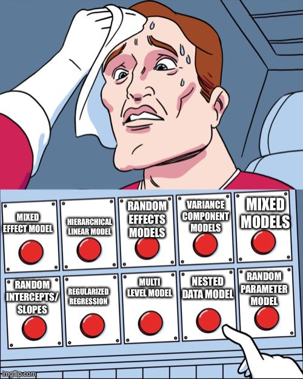
In most of my research, I work with country-level panel data where each row is a country in a specific year (Afghanistan in 2010, Afghanistan in 2011, and so on), also known as time-series cross-sectional (TSCS) data. Building statistical models for TSCS panel data is tricky, and most introductory statistics classes don’t typically cover how to do it. Countries are repeated longitudinally over time, which means that time itself influences changes in the outcome variable. Countries also have internal trends and characteristics that influence the outcome—some might have a legacy of post-colonial civil war, for example. And to make it all more complex, countries are nested in continents and regions, and there might be regional trends that influence the outcome. Oh, and time-based trends can be different across countries and continents too. Working with all these different moving parts gets really difficult.
I have a few different past blog posts where I show some of the complexities of working with this kind of data, like calculating average marginal effects, generating inverse probability weights for panel data, or running marginal structural models on panel data, and even one where I play with economists’ preferred approach to panel data: two-way fixed effects (TWFE). But I keep forgetting the basics of how to correctly structure multilevel models for country-year data, and all the examples I find online and in textbooks are about contexts I don’t work with (participants in an experimental sleep study!). When there are examples involving countries and years, they typically refer to individual people nested in countries nested in continents (like survey respondents) and not to whole countries, which trips me up when adapting their approaches.
So, as a service to future-me, here’s a basic guide to dealing with country-year panel data using Bayesian multilevel modeling!
This guide is hardly comprehensive or rigorous. I don’t use the intimidating math notation for nested random effects that everyone else uses. I don’t set any priors for the Bayesian models and instead just stick with the defaults, which are often inefficient. I don’t check any of the Bayesian model diagnostics (like pp_check(). In real life I do do all that, but this is just an overview of the practical mechanics of multilevel models, so I’m keeping it as basic and simple as possible.
There are a ton of other really helpful resources about multilevel models. I had all these open in tabs while building this guide:
- Cheat sheet for the R syntax for nested models (I refer to this all the time). The answers at this Cross Validated question are also fantastic, especially for thinking about how to interpret the coefficients and think about which parts of which coefficients are fixed and random.
- Michael Clark’s guide to mixed models with R, especially the mixed models, more random effects, common extensions, and Bayesian approaches sections.
- Kristoffer Magnusson’s “Using R and lme/lmer to fit different two- and three-level longitudinal models”.
- Solomon Kurz’s tidyverse/brms translation of chapter 12 of Richard McElreath’s Statistical Rethinking.
- Solomon Kurz’s tidyverse/brms translation of Singer and Willett’s Applied Longitudinal Data Analysis, especially chapter 3 and chapter 4.
- This short Nature article with a really neat graphic showing different types of nested and crossed random effects structures. Yury Zablotski’s post here explores all of those types.
- Sean Anderson’s “Generalized Linear Mixed-Effects Modeling in R” workshop, especially section 15 which uses gapminder data.
Who this guide is for
Here’s what I assume you know:
You’re familiar with R and the tidyverse (particularly dplyr and ggplot2).
You’re familiar with brms for running Bayesian regression models. See the vignettes here, examples like this, or resources like these for an introduction.
You’re somewhat familiar with multilevel models. Confusingly, these are also called mixed effect models, random effect models, and hierarchical models, among others! They’re all the same thing! (image below by Chelsea Parlett-Pelleriti)
See examples like this or this or this or this. Basically Google “lme4 example” (lme4 is what you use for frequentist, non-Bayesian multilevel models with R) or “brms multilevel example” and you’ll find a bunch. For a more formal treatment, see chapter 12 in Richard McElreath’s Statistcal Rethinking book (or this R translation of it by Solomon Kurz).
Let’s get started by loading all the libraries we’ll need (and creating a couple helper functions):
library(tidyverse) # ggplot, dplyr, %>%, and friends
library(gapminder) # Country-year panel data from the Gapminder Project
library(brms) # Bayesian modeling through Stan
library(tidybayes) # Manipulate Stan objects in a tidy way
library(broom) # Convert model objects to data frames
library(broom.mixed) # Convert brms model objects to data frames
library(emmeans) # Calculate marginal effects in even fancier ways
library(ggh4x) # For nested facets in ggplot
library(ggrepel) # For nice non-overlapping labels in ggplot
library(ggdist) # For distribution-related ggplot geoms
library(scales) # For formatting numbers with comma(), dollar(), etc.
library(patchwork) # For combining plots
library(ggokabeito) # Colorblind-friendly color palette
# Make all the random draws reproducible
set.seed(1234)
# Bayes stuff
# Use the cmdstanr backend for Stan because it's faster and more modern than
# the default rstan. You need to install the cmdstanr package first
# (https://mc-stan.org/cmdstanr/) and then run cmdstanr::install_cmdstan() to
# install cmdstan on your computer.
options(mc.cores = 4, # Use 4 cores
brms.backend = "cmdstanr")
bayes_seed <- 1234
# Custom ggplot theme to make pretty plots
# Get Barlow Semi Condensed at https://fonts.google.com/specimen/Barlow+Semi+Condensed
theme_clean <- function() {
theme_minimal(base_family = "Barlow Semi Condensed") +
theme(panel.grid.minor = element_blank(),
plot.background = element_rect(fill = "white", color = NA),
plot.title = element_text(face = "bold"),
axis.title = element_text(face = "bold"),
strip.text = element_text(face = "bold", size = rel(0.8), hjust = 0),
strip.background = element_rect(fill = "grey80", color = NA),
legend.title = element_text(face = "bold"))
}
# Make labels use Barlow by default
update_geom_defaults("label_repel",
list(family = "Barlow Semi Condensed",
fontface = "bold"))
update_geom_defaults("label",
list(family = "Barlow Semi Condensed",
fontface = "bold"))
# The ggh4x paackage includes a `facet_nested()` function for nesting facets
# (like countries in continents). Throughout this post, I want the
# continent-level facets to use bolder text and a lighter gray strip. I don't
# want to keep repeating all these settings, though, so I create a list of the
# settings here with `strip_nested()` and feed it to `facet_nested_wrap()` later
nested_settings <- strip_nested(
text_x = list(element_text(family = "Barlow Semi Condensed Black",
face = "plain"), NULL),
background_x = list(element_rect(fill = "grey92"), NULL),
by_layer_x = TRUE)Example data: health and wealth over time
Throughout this example, we’re going to use data from Hans Rosling’s Gapminder project to explore the relationship between wealth (measured as GDP per capita, or average income per person) and health (measured as life expectancy). You may have seen Hans Rosling’s delightful TED talk showing how global health and wealth have been increasing since 1800—he became internet famous because of this work. Sadly, Hans died in February 2017.
Before we start, watch this short 4-minute version of his famous health/wealth presentation. It’s the best overview of the complexities of the panel data we’re going to be working with:
The original health/wealth data is all available at the Gapminder Project, but Jenny Bryan has conveniently created an R package called gapminder with the data already cleaned and nicely structured, so we’ll use that. The data from gapminder includes observations from 142 different countries across 5 continents, and it ranges from 1952–2007 (skipping every five years, so there are observations for 1952, 1957, 1962, and so on). To simplify things, we’ll drop the Oceania continent (which includes only two countries: Australia and New Zealand), and we’ll choose two representative-ish countries in each of the remaining continents for the different country-specific trends we’ll be looking at throughout this guide.
# Little dataset of 8 countries (2 for each of the 4 continents in the data)
# that are good examples of different trends and intercepts
countries <- tribble(
~country, ~continent,
"Egypt", "Africa",
"Sierra Leone", "Africa",
"Pakistan", "Asia",
"Yemen, Rep.", "Asia",
"Bolivia", "Americas",
"Canada", "Americas",
"Italy", "Europe",
"Portugal", "Europe"
)
# Clean up the gapminder data a little
gapminder <- gapminder::gapminder %>%
# Remove Oceania since there are only two countries there and we want bigger
# continent clusters
filter(continent != "Oceania") %>%
# Scale down GDP per capita so it's more interpretable ("a $1,000 increase in
# GDP" vs. "a $1 increase in GDP")
# Also log it
mutate(gdpPercap_1000 = gdpPercap / 1000,
gdpPercap_log = log(gdpPercap)) %>%
mutate(across(starts_with("gdp"), list("z" = ~scale(.)))) %>%
# Make year centered on 1952 (so we're counting the years since 1952). This
# (1) helps with interpretability, since the intercept will show the average
# at 1952 instead of the average at 0 CE, and (2) helps with estimation speed
# since brms/Stan likes to work with small numbers
mutate(year_orig = year,
year = year - 1952) %>%
# Indicator for the 8 countries we're focusing on
mutate(highlight = country %in% countries$country)
# Extract rows for the example countries
original_points <- gapminder %>%
filter(country %in% countries$country) %>%
# Use real years
mutate(year = year_orig)Here’s what this cleaned up data looks like. Notice how the scaled and centered columns (the ones with the _z suffix) show up a little differently here (as one-column matrices)—we’ll see why that is later.
glimpse(gapminder)
## Rows: 1,680
## Columns: 13
## $ country <fct> "Afghanistan", "Afghanistan", "Afghanistan", "Afghanistan", "Af…
## $ continent <fct> Asia, Asia, Asia, Asia, Asia, Asia, Asia, Asia, Asia, Asia, Asi…
## $ year <dbl> 0, 5, 10, 15, 20, 25, 30, 35, 40, 45, 50, 55, 0, 5, 10, 15, 20,…
## $ lifeExp <dbl> 28.8, 30.3, 32.0, 34.0, 36.1, 38.4, 39.9, 40.8, 41.7, 41.8, 42.…
## $ pop <int> 8425333, 9240934, 10267083, 11537966, 13079460, 14880372, 12881…
## $ gdpPercap <dbl> 779, 821, 853, 836, 740, 786, 978, 852, 649, 635, 727, 975, 160…
## $ gdpPercap_1000 <dbl> 0.779, 0.821, 0.853, 0.836, 0.740, 0.786, 0.978, 0.852, 0.649, …
## $ gdpPercap_log <dbl> 6.66, 6.71, 6.75, 6.73, 6.61, 6.67, 6.89, 6.75, 6.48, 6.45, 6.5…
## $ gdpPercap_z <dbl[,1]> <matrix[30 x 1]>
## $ gdpPercap_1000_z <dbl[,1]> <matrix[30 x 1]>
## $ gdpPercap_log_z <dbl[,1]> <matrix[30 x 1]>
## $ year_orig <int> 1952, 1957, 1962, 1967, 1972, 1977, 1982, 1987, 1992, 1997,…
## $ highlight <lgl> FALSE, FALSE, FALSE, FALSE, FALSE, FALSE, FALSE, FALSE, FAL…The effect of continent, country, and time on life expectancy
Before we look at the relationship between wealth and health over time, it’s important to understand how multilevel modeling works, so we’ll simplify things and only look at the the relationship between life expectancy and time and how that relationship differs across continent and country.
As we saw in the video, pretty much every country’s life expectancy has increased over time. Countries all have different starting points or intercepts in 1952, and continent-specific differences influence those intercepts (e.g., Western Europe has much higher life expectancy than sub-Saharan Africa), and countries each have their own trends over time. Compare Egypt, which starts off fairly low and then rockets up fairly quickly from the 1970s to the 1990s, with Canada, which starts fairly high and ends really high. Some countries see negative trends over time, like Rwanda and Sierra Leone.
ggplot(gapminder, aes(x = year_orig, y = lifeExp,
group = country, color = continent)) +
geom_line(aes(size = highlight)) +
geom_smooth(method = "lm", aes(color = NULL, group = NULL),
color = "grey60", size = 1, linetype = "21",
se = FALSE, show.legend = FALSE) +
geom_label_repel(data = filter(gapminder, year == 0, highlight == TRUE),
aes(label = country), direction = "y", size = 3, seed = 1234,
show.legend = FALSE) +
annotate(geom = "label", label = "Global trend", x = 1952, y = 50,
size = 3, color = "grey60") +
scale_size_manual(values = c(0.075, 1), guide = "none") +
scale_color_okabe_ito(order = c(2, 3, 6, 1)) +
labs(x = NULL, y = "Life expectancy", color = "Continent") +
theme_clean() +
theme(legend.position = "bottom")
## `geom_smooth()` using formula = 'y ~ x'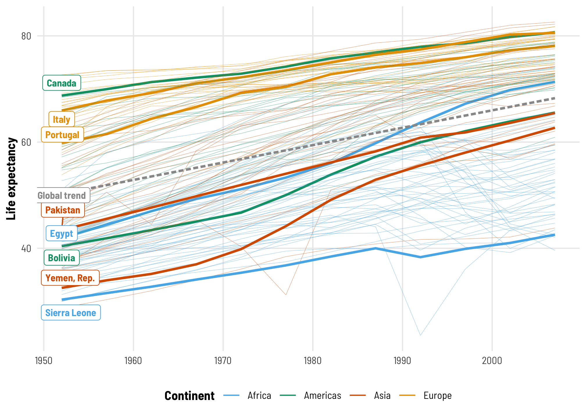
Regular regression
To start, we’ll make a simple boring model that completely ignores continent- and country-level differences and only looks at how much life expectancy increases over time. This is the dotted gray line in the plot above.
model_boring <- brm(
bf(lifeExp ~ year),
data = gapminder,
chains = 4, seed = bayes_seed
)
## Start samplingtidy(model_boring)
## # A tibble: 3 × 8
## effect component group term estimate std.error conf.low conf.high
## <chr> <chr> <chr> <chr> <dbl> <dbl> <dbl> <dbl>
## 1 fixed cond <NA> (Intercept) 50.3 0.530 49.2 51.3
## 2 fixed cond <NA> year 0.327 0.0166 0.295 0.360
## 3 ran_pars cond Residual sd__Observation 11.6 0.197 11.2 12.0When year is zero, or in 1952, the average life expectancy is 50.26 years, and it increases by 0.33 years each year after that.
That’s cool, I guess, but we’re ignoring the structure of the data. We’re not accounting for any of the country-specific or region-specific trends that might also influence life expectancy. This is apparent when we plot predictions from this model—each country has the same predicted trend and the same starting point. None of these lines fit any of the example countries at all.
pred_model_boring <- model_boring %>%
epred_draws(newdata = expand_grid(country = countries$country,
year = unique(gapminder$year))) %>%
mutate(year = year + 1952) %>%
left_join(countries, by = "country")
ggplot(pred_model_boring, aes(x = year, y = .epred)) +
geom_point(data = original_points, aes(y = lifeExp),
color = "grey50", size = 3, alpha = 0.5) +
stat_lineribbon(alpha = 0.5, size = 0.5) +
scale_fill_brewer(palette = "Reds") +
labs(title = "Global year trend with no country-based variation",
subtitle = "lifeExp ~ year",
x = NULL, y = "Predicted life expectancy") +
guides(fill = "none") +
facet_nested_wrap(vars(continent, country), nrow = 2, strip = nested_settings) +
theme_clean() +
theme(legend.position = "bottom",
plot.subtitle = element_text(family = "Consolas"),
axis.text.x = element_text(angle = 45, hjust = 0.5, vjust = 0.5))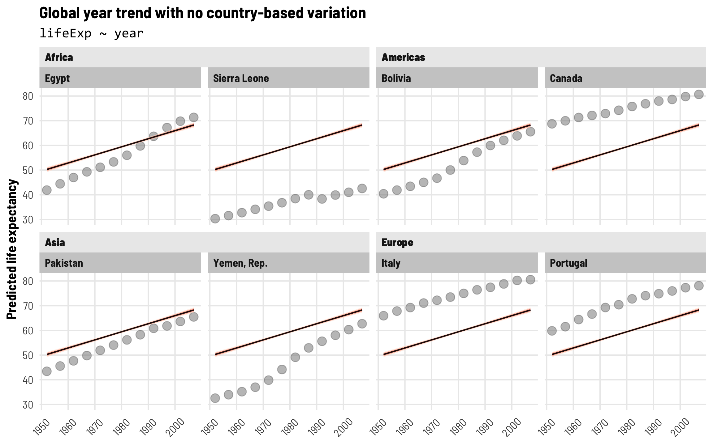
Introduction to random effects: Intercepts for each continent
For now, we’re interested in the effect of time on life expectancy: how much does life expectancy increase on average as time passes (or as year increases)? We already estimated this basic model:
\[ \text{Life expectancy} = \beta_0 + \beta_1 \text{Year} + \epsilon \]
The year effect here is the \(\beta_1\) coefficient, but this global estimate doesn’t account for continent- or country-specific differences, and that kind of variation is important—we don’t necessarily want to combine the trends in life expectancy across Western Europe and Latin America since they’re so different.
That \(\epsilon\) error term is doing a lot of work. It represents all the variation in life expectancy that’s not explained by (1) the baseline global life expectancy when year is 0 (or 1952), and by (2) increases in year. All sorts of unmeasured things are hidden in that \(\epsilon\), like continent-level differences that might explain some additional variation in life expectancy. We can pull that continent-specific variation out of the error term to show that it exists:
\[ \text{Life expectancy} = \beta_0 + \beta_1 \text{Year} + (b_{\text{Continent}} + \epsilon) \]
We use the Latin letter \(b\) instead of the Greek \(\beta\) to signal that it’s a different kind of parameter. The \(\beta\) parameters are “fixed effects” (this gets so confusing since in the world of econometrics and political science, “fixed effects” typically refer to indicator variables, like when you control for state or country. That’s not the case here! Fixed effects here refer to population-level parameters that apply to all the observations in the data. Random effects refer to variations or deviations within subpopulations in the data (country, year, region, etc.)). Random effects, or \(b\), show the offset from specific fixed parameters.
Right now, this continent-level offset is hidden in the unestimated error term \(\epsilon\), but we can move it around and pair it with one of the fixed terms in the model: either the intercept or year. For now we’ll lump it in with the intercept and say that this continent random effect shifts the intercept up and down based on continent-level differences (we’ll lump it in with the year effect a little later). We can rewrite our model like this now:
\[ \text{Life expectancy} = (\beta_0 + b_{0, \text{Continent}}) + \beta_1 \text{Year} + \epsilon \]
All we’ve really done is take \(b_{\text{Continent}}\), move it over next to the intercept term \(\beta_0\), and add a 0 subscript to show that it represents the offset or deviation from \(\beta_0\) for each continent.
If you’ve ever worked with regular old OLS regression with lm(), you might be thinking that this is basically just the same as including an indicator variable for continent. For instance, if you run a model like this…
model_super_boring <- lm(lifeExp ~ year + continent, data = gapminder)
tidy(model_super_boring)
## # A tibble: 5 × 5
## term estimate std.error statistic p.value
## <chr> <dbl> <dbl> <dbl> <dbl>
## 1 (Intercept) 39.9 0.411 97.0 0
## 2 year 0.328 0.0104 31.5 2.97e-171
## 3 continentAmericas 15.8 0.517 30.5 3.47e-163
## 4 continentAsia 11.2 0.473 23.7 3.69e-107
## 5 continentEurope 23.0 0.487 47.3 9.85e-311…you get coefficients for each of the continents (except Africa, which is the base case). You can then add these continent-specific coefficients to the intercept to get continent-specific intercepts. For example, the average life expectancy in Africa in 1952 (i.e. when year is 0, or the intercept) is 39.86 years. Europe’s average life expectancy in 1952 is 39.86 + 23.04, or 62.9 years, and so on.
So why use these random effects instead of using indicator variables like this?
One reason is that thinking about these group-specific offsets as random effects allows us to model them more richly. We can define the whole range of group offsets using a distribution. For example, we could say that the intercept offsets are normally distributed with a mean of 0 and a standard deviation of \(\tau\) (note that we’re using Greek again—this \(\tau\) variance is a population-level parameter and doesn’t vary by group). Some continents will have a positive offset; some will have a negative offset; in general the average of the offsets should be 0; and the variation in those offsets can be measured with \(\tau\).
\[ b_{0, \text{Continent}} \sim \mathcal{N}(0, \tau) \]
Notice how we’re now working with a regression model with two parts: one part at a continent level where we estimate continent-specific offsets in the intercept, and one part at the observation level (which in this case is countries). That’s why this approach is often called “multilevel modeling”—we have multiple levels in our model:
\[ \begin{aligned} \text{Life expectancy} &= (\beta_0 + b_{0, \text{Continent}}) + \beta_1 \text{Year} + \epsilon \\ b_{0, \text{Continent}} &\sim \mathcal{N}(0, \tau) \end{aligned} \]
Fixed (population-level) effects
Here’s what this looks like in practice. We’ll take our boring basic model and add a (1 | continent) term, which means that we’re letting the intercept (or 1) vary by continent. This is the code version of lumping the random continent effect with the intercept, or creating \((\beta_0 + b_{0, \text{Continent}})\).
# Each continent gets its own intercept
model_continent_only <- brm(
bf(lifeExp ~ year + (1 | continent)),
data = gapminder,
control = list(adapt_delta = 0.95),
chains = 4, seed = bayes_seed
)
## Start sampling
## Warning: 2 of 4000 (0.0%) transitions ended with a divergence.
## See https://mc-stan.org/misc/warnings for details.If we look at the results we find basically the same coefficients we found in the original boring model: average global life expectancy in 1952 is 52.4 years, and it increases by 0.33 each year after that, on average. We also have errors and credible intervals, like any regular brms-based regression model.
tidy(model_continent_only)
## # A tibble: 4 × 8
## effect component group term estimate std.error conf.low conf.high
## <chr> <chr> <chr> <chr> <dbl> <dbl> <dbl> <dbl>
## 1 fixed cond <NA> (Intercept) 52.4 5.83 40.8 64.3
## 2 fixed cond <NA> year 0.328 0.0105 0.306 0.348
## 3 ran_pars cond continent sd__(Intercept) 12.4 5.52 5.67 27.3
## 4 ran_pars cond Residual sd__Observation 7.37 0.126 7.13 7.62These \(\beta_0\) and \(\beta_1\) coefficients for the intercept and year are considered “fixed effects” (again, this is totally unrelated to the idea of indicator variables from econometrics, political science, and other social sciences!). These are population-level parameters that transcend continent-specific differences. The default results from summary() make this distinction a little more clear and calls them “Population-Level Effects”:
summary(model_continent_only)
...
## Population-Level Effects:
## Estimate Est.Error l-95% CI u-95% CI Rhat Bulk_ESS Tail_ESS
## Intercept 52.40 5.83 40.78 64.29 1.01 865 1119
## year 0.33 0.01 0.31 0.35 1.00 2351 2081
...We can clean up the results from tidy() and show only these fixed effects with the effects = "fixed" argument:
tidy(model_continent_only, effects = "fixed")
## # A tibble: 2 × 7
## effect component term estimate std.error conf.low conf.high
## <chr> <chr> <chr> <dbl> <dbl> <dbl> <dbl>
## 1 fixed cond (Intercept) 52.4 5.83 40.8 64.3
## 2 fixed cond year 0.328 0.0105 0.306 0.348Continent-level variance
The whole reason we’re using a multilevel model here instead of just using indicator variables is that we can use information about the variation in continents to improve our coefficient estimates and model accuracy. Notice that there were extra new parameters in the output from tidy(), which we can also see if we use the effects = "ran_pars" argument (these also show up in the output from summary() as “Group-Level Effects”):
tidy(model_continent_only, effects = "ran_pars")
## # A tibble: 2 × 8
## effect component group term estimate std.error conf.low conf.high
## <chr> <chr> <chr> <chr> <dbl> <dbl> <dbl> <dbl>
## 1 ran_pars cond continent sd__(Intercept) 12.4 5.52 5.67 27.3
## 2 ran_pars cond Residual sd__Observation 7.37 0.126 7.13 7.62We have two extra random parameters here:
- The estimated variance/standard deviation of the continent effect, or \(\tau\) from our \(b_{0, \text{Continent}} \sim \mathcal{N}(0, \tau)\) model level from before, represented with the
sd__(Intercept)term in thecontinentgroup: 12.4 - The total residual variation (i.e. unexplained variation in life expectancy), represented with the
sd__Observationterm in theResidualgroup: 7.37
To borrow heavily from Michael Clark’s excellent explanation of these variance components, this \(\tau\) parameter tells how much life expectancy bounces around as we move from continent to continent. We can predict life expectancy based on the year trend, but each continent has its own unique life expectancy offset, and this \(\tau\) is the average deviation across all the continents. Practically speaking, there’s a substantial amount of cross-continent variation here: 12.4 years!
We can also think about this continent-level variance as a percentage of the total residual variance in the model. Continent-level variation contributes 63% (12.4 / (12.4 + 7.37)) of the total variance in life expectancy.
Continent-level random effects
We can see these actual offsets with the ranef() function. By default this returns an unwieldy list with multi-dimensional arrays nested in it, so we’ll convert it to a nice data frame here so we can work with it later.
continent_offsets <- ranef(model_continent_only)$continent %>%
as_tibble(rownames = "continent")
continent_offsets
## # A tibble: 4 × 5
## continent Estimate.Intercept Est.Error.Intercept Q2.5.Intercept Q97.5.Intercept
## <chr> <dbl> <dbl> <dbl> <dbl>
## 1 Africa -12.5 5.81 -24.3 -0.830
## 2 Americas 3.24 5.81 -8.52 15.1
## 3 Asia -1.34 5.81 -13.1 10.5
## 4 Europe 10.5 5.82 -1.37 22.3Each of these estimates represent the continent-specific offsets in the intercept, or \(b_{0, \text{Continent}}\). To help with the intuition, we can add these offsets to the global population-level intercept to see the actual intercept for each continent. Let’s plug these values into our model equation, with year set to 0 (or 1952):
\[ \begin{aligned} \text{Life expectancy}_\text{general} &= (\beta_0 + b_{0, \text{Continent}}) + \beta_1 \text{Year} + \epsilon \\ \text{Life expectancy}_\text{Africa} &= (52.4 + -12.52) + (0.33 \times 0) = 39.87 \\ \text{Life expectancy}_\text{Americas} &= (52.4 + 3.24) + (0.33 \times 0) = 55.64 \\ \text{Life expectancy}_\text{Asia} &= (52.4 + -1.34) + (0.33 \times 0) = 51.06 \\ \text{Life expectancy}_\text{Europe} &= (52.4 + 10.48) + (0.33 \times 0) = 62.88 \end{aligned} \]
We don’t need to do this all by hand though. The coef() function will return these group-specific intercepts with the offsets already incorporated. Notice how the results are the same—each continent has its own intercept, while the \(\beta_1\) coefficient for year is the same across continents:
coef(model_continent_only)$continent %>%
as_tibble(rownames = "continent") %>%
select(continent, starts_with("Estimate"))
## # A tibble: 4 × 3
## continent Estimate.Intercept Estimate.year
## <chr> <dbl> <dbl>
## 1 Africa 39.9 0.328
## 2 Americas 55.6 0.328
## 3 Asia 51.1 0.328
## 4 Europe 62.9 0.328Alternatively, we can also use the powerful emmeans package to calculate predicted values at different combinations of our model’s variables. In this case our model uses a Gaussian distribution so it works like regular OLS regression (which means we can just add coefficients together), but other models like logistic regression or beta regression require a lot more work to combine the coefficients correctly. The emmeans() function will calculate predicted values of life expectancy, while the emtrends() function will calculate coefficients, incorporating group-level effects as needed (that’s what the re_formula = NULL argument is doing here; see this post for more details about that). These values should be the same that we found both manually with math and with coef():
model_continent_only %>%
emmeans(~ continent + year,
at = list(year = 0), # Look at predicted values for 1952
epred = TRUE, # Use expected predictions from the posterior
re_formula = NULL) # Incorporate random effects
## Loading required namespace: rstanarm
## continent year emmean lower.HPD upper.HPD
## Africa 0 39.9 39.1 40.7
## Americas 0 55.6 54.7 56.7
## Asia 0 51.1 50.1 51.9
## Europe 0 62.9 61.9 63.8
##
## Point estimate displayed: median
## HPD interval probability: 0.95Visualize continent-specific trends
Finally, let’s visualize this continent-specific year trend. Each of these lines has the same slope, but the intercepts now shift up and down based on continent. The lines are substantially higher in Europe and substantially lower in Africa:
newdata_country_continent <- expand_grid(country = countries$country,
year = unique(gapminder$year)) %>%
left_join(countries, by = "country")
pred_model_continent_only <- model_continent_only %>%
epred_draws(newdata_country_continent, re_formula = NULL) %>%
mutate(year = year + 1952)
ggplot(pred_model_continent_only, aes(x = year, y = .epred)) +
geom_point(data = original_points, aes(y = lifeExp),
color = "grey50", size = 3, alpha = 0.5) +
stat_lineribbon(alpha = 0.5) +
scale_fill_brewer(palette = "Reds") +
labs(title = "Intercepts for year trend vary by continent",
subtitle = "lifeExp ~ year + (1 | continent)",
x = NULL, y = "Predicted life expectancy") +
guides(fill = "none") +
facet_nested_wrap(vars(continent, country), nrow = 2, strip = nested_settings) +
theme_clean() +
theme(legend.position = "bottom",
plot.subtitle = element_text(family = "Consolas"),
axis.text.x = element_text(angle = 45, hjust = 0.5, vjust = 0.5))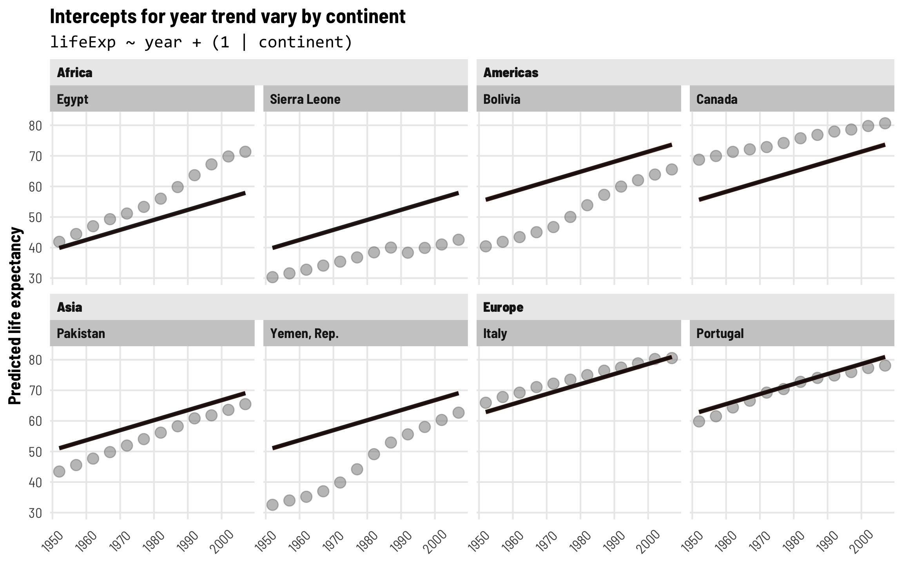
Intercepts for each country
Continent-level effects are neat, but the predicted trends in the plot above still don’t really fit the data that well (except maybe in Europe). Instead of including random effects for continents, we can include country effects so that each country gets its own offset and intercept. Let’s make this model:
\[ \begin{aligned} \text{Life expectancy} &= (\beta_0 + b_{0, \text{Country}}) + \beta_1 \text{Year} + \epsilon \\ b_{0, \text{Country}} &\sim \mathcal{N}(0, \tau) \end{aligned} \]
# Each country gets its own intercept
model_country_only <- brm(
bf(lifeExp ~ year + (1 | country)),
data = gapminder,
chains = 4, seed = bayes_seed,
iter = 4000 # Double the number of iterations to help with convergence
)
## Start samplingtidy(model_country_only)
## # A tibble: 4 × 8
## effect component group term estimate std.error conf.low conf.high
## <chr> <chr> <chr> <chr> <dbl> <dbl> <dbl> <dbl>
## 1 fixed cond <NA> (Intercept) 50.3 0.909 48.5 52.0
## 2 fixed cond <NA> year 0.328 0.00516 0.317 0.338
## 3 ran_pars cond country sd__(Intercept) 11.1 0.655 9.93 12.5
## 4 ran_pars cond Residual sd__Observation 3.60 0.0657 3.48 3.73Fixed (population-level) effects
The global population-level coefficients (or “fixed effects”, but again these are not the same as indicator variables!) are roughly the same that we saw in both the original boring model and the model with continent effects: in 1952 (when year is 0) the average life expectancy is 50.3 years, and it increases by 0.33 years annually after that.
Country-level variation
Because we’re using random effects, we have information about the \(\tau\) parameter for the variance in country offsets, which shows us how much life expectancy bounces around from country to country. As with continents, we have a ton of cross-country variation: 11.07 years! Country-specific offsets are centered around 0 ± a huge standard deviation of 11.07. Accounting for country differences is going to be crucial for this model.
If we look at country-level variance as a percentage of the total residual variance, we can see that country differences are really important. Country-level variation contributes 75% (11.07 / (11.07 + 3.6)) of the total variance in life expectancy.
Country-level random effects
We can look at country-level offsets for our eight example countries with ranef(). Canada, Italy, and Portugal have offsets that are substantially above the global average, while Yemen and Sierra Leone are substantially below it.
country_offsets <- ranef(model_country_only)$country %>%
as_tibble(rownames = "country") %>%
filter(country %in% countries$country) %>%
select(country, starts_with("Estimate"))
country_offsets
## # A tibble: 8 × 2
## country Estimate.Intercept
## <chr> <dbl>
## 1 Bolivia -6.76
## 2 Canada 15.5
## 3 Egypt -3.02
## 4 Italy 14.6
## 5 Pakistan -4.39
## 6 Portugal 11.0
## 7 Sierra Leone -22.3
## 8 Yemen, Rep. -12.4We can see the actual country-specific intercepts too. Each of these intercepts represents the life expectancy in these countries in 1952. Note that the coefficient for year is the same in each—that’s because it’s a global population-level effect and isn’t country-specific.
coef(model_country_only)$country %>%
as_tibble(rownames = "country") %>%
filter(country %in% countries$country) %>%
select(country, starts_with("Estimate"))
## # A tibble: 8 × 3
## country Estimate.Intercept Estimate.year
## <chr> <dbl> <dbl>
## 1 Bolivia 43.5 0.328
## 2 Canada 65.8 0.328
## 3 Egypt 47.3 0.328
## 4 Italy 64.9 0.328
## 5 Pakistan 45.9 0.328
## 6 Portugal 61.3 0.328
## 7 Sierra Leone 28.0 0.328
## 8 Yemen, Rep. 37.9 0.328Visualize country-specific trends
With these country-specific intercepts, we can now see that the model fits a lot better across countries. Each predicted year trend still has the same slope, but the line is shifted up and down based on the country-specific offsets. Great!
pred_model_country_only <- model_country_only %>%
epred_draws(newdata = expand_grid(country = countries$country,
year = unique(gapminder$year)),
re_formula = NULL) %>%
mutate(year = year + 1952) %>%
left_join(countries, by = "country")
ggplot(pred_model_country_only, aes(x = year, y = .epred)) +
geom_point(data = original_points, aes(y = lifeExp),
color = "grey50", size = 3, alpha = 0.5) +
stat_lineribbon(alpha = 0.5) +
scale_fill_brewer(palette = "Reds") +
labs(title = "Intercepts for year trend vary by country",
subtitle = "lifeExp ~ year + (1 | country)",
x = NULL, y = "Predicted life expectancy") +
guides(fill = "none") +
facet_nested_wrap(vars(continent, country), nrow = 2, strip = nested_settings) +
theme_clean() +
theme(legend.position = "bottom",
plot.subtitle = element_text(family = "Consolas"),
axis.text.x = element_text(angle = 45, hjust = 0.5, vjust = 0.5))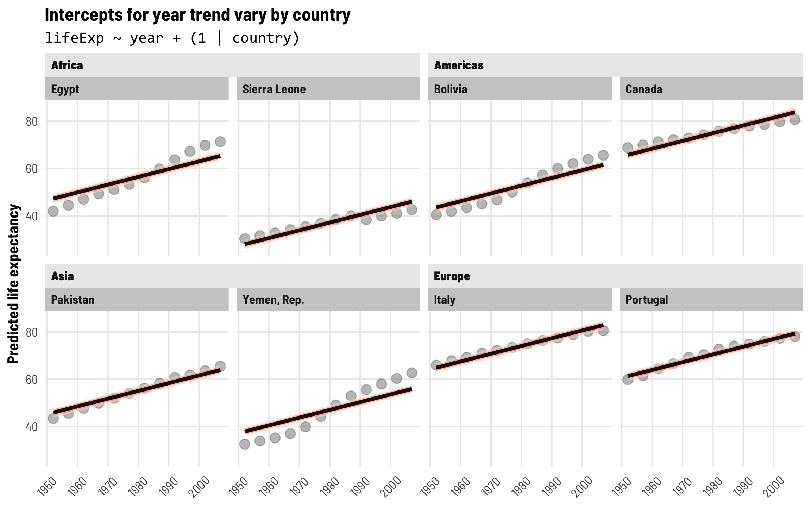
⭐ Intercepts and slopes for each country ⭐
These country-level effects are cool and fit the data fairly well, but there are still some substantial errors. The predicted lines fit Italy and Portugal pretty well, but the year trend in Yemen, Egypt, and Bolivia is steeper than predicted, while the year trend in Sierra Leone is shallower. It would be neat if we could incorporate country-specific offsets into both the intercept and the year trend. Fortunately, multilevel modeling lets us do this!
We’d previously excised random country effects \(b_{\text{Country}}\) from the error term \(\epsilon\) and lumped them in with the fixed intercept term, creating country-specific offsets \(b_{0, \text{Country}}\). We can do a similar thing and add country-specific offsets to the fixed year term too. We’ll call this \(b_{1, \text{Country}}\) (with a 1 subscript to show that it goes with \(\beta_1\)). This random term also gets its own distribution of errors with its own variation. We’ll add subscripts to these \(\tau\) terms so we can keep track of the intercept variance and the year trend variance.
\[ \begin{aligned} \text{Life expectancy} &= (\beta_0 + b_{0, \text{Country}}) + (\beta_1 + b_{1, \text{Country}}) \text{Year} + \epsilon \\ b_{0, \text{Country}} &\sim \mathcal{N}(0, \tau_0) \\ b_{1, \text{Country}} &\sim \mathcal{N}(0, \tau_1) \end{aligned} \]
The R syntax for this kind of random effects term is (1 + year | country), which means that we’re letting both the intercept (1) and year vary by country.
# Each country gets its own slope and intercept for the year trend
model_country_year <- brm(
bf(lifeExp ~ year + (1 + year | country)),
data = gapminder,
chains = 4, seed = bayes_seed,
iter = 4000 # Double the number of iterations to help with convergence
)
## Start samplingtidy(model_country_year)
## # A tibble: 6 × 8
## effect component group term estimate std.error conf.low conf.high
## <chr> <chr> <chr> <chr> <dbl> <dbl> <dbl> <dbl>
## 1 fixed cond <NA> (Intercept) 50.3 1.08 48.1 52.3
## 2 fixed cond <NA> year 0.328 0.0139 0.301 0.355
## 3 ran_pars cond country sd__(Intercept) 12.3 0.747 10.9 13.8
## 4 ran_pars cond country sd__year 0.161 0.0103 0.142 0.182
## 5 ran_pars cond country cor__(Intercept).year -0.422 0.0710 -0.551 -0.274
## 6 ran_pars cond Residual sd__Observation 2.20 0.0414 2.12 2.28Fixed (population-level) effects
The global population-level coefficients are once again basically the same that we’ve seen before: in 1952 the average life expectancy is 50.25 years, and it increases by 0.33 years annually after that.
Country-level variation
We have a couple new rows in the random parameters part of our results, though. The variance for the intercept (sd__(Intercept)) corresponds to \(\tau_0\) and still shows us how much life expectancy bounces around across countries. We have a new term for country-specific variation in the year effect (sd__year), which corresponds to \(\tau_1\). This is considerably smaller than the intercept variance, but that’s because the year trend is a slope that measures the increase or decrease in life expectancy as year increases. Recall that our global year trend is 0.33. Country-specific differences imply that our trend is something like 0.33 ± 0.16 standard deviations across countries.
Since we’re assuming a normal distribution of random offsets, the distribution of all country-specific year trends looks something like this. The year trend in most countries is positive, sometimes going as high as 0.8 years of life expectancy per year:
ggplot(data = tibble(x = seq(-0.3, 1, by = 0.1)), aes(x = x)) +
stat_function(geom = "area",
fun = dnorm, args = list(mean = 0.327, sd = 0.161),
fill = palette_okabe_ito(order = 6)) +
geom_vline(xintercept = 0) +
labs(title = "Year trend across countries",
x = "Annual increase in life expectancy") +
theme_clean()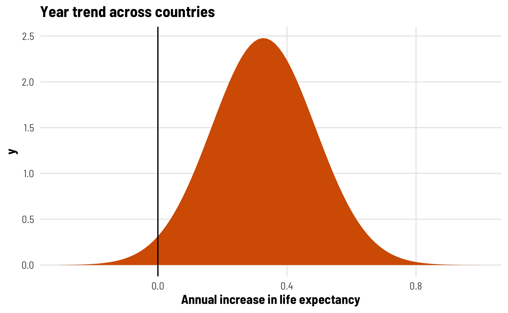
The second new parameter we have is cor__(Intercept).year, which shows us the correlation of the country-specific intercepts and slopes. This is a correlation, so it ranges from −1 to 1, with 0 indicating no correlation. In this case, we see a correlation of -0.42, which is fairly strong. It indicates that countries with lower intercepts are associated with larger year trends. This makes sense—every country in the dataset sees increased life expectancy over time, and countries with a lower starting point have more room to grow and grow more quickly. Canada, for instance, starts off with high life expectancy and grows a little between 1952 and 2007, while Egypt starts off with low life expectancy and grows rapidly through 2007.
Country-level random effects
We can look at the country-level offsets for both the intercept and the year slope now. As before, Canada, Italy, and Portugal have intercept offsets that are substantially above the global average, while Bolivia, Yemen, and Sierra Leone are substantially below it. We can also now look at country-specific slope offsets: Egypt and Yemen have much steeper slopes than the global average, while Canada’s is shallower than the global effect.
country_year_offsets <- ranef(model_country_year)$country %>%
as_tibble(rownames = "country") %>%
filter(country %in% countries$country) %>%
select(country, starts_with("Estimate"))
country_year_offsets
## # A tibble: 8 × 3
## country Estimate.Intercept Estimate.year
## <chr> <dbl> <dbl>
## 1 Bolivia -11.2 0.163
## 2 Canada 18.5 -0.104
## 3 Egypt -8.96 0.216
## 4 Italy 16.2 -0.0562
## 5 Pakistan -6.42 0.0746
## 6 Portugal 10.9 0.00814
## 7 Sierra Leone -19.5 -0.107
## 8 Yemen, Rep. -19.7 0.265We can also look at the already-combined fixed effect + random offset for country-specific intercepts and slopes. Notice how both the intercept and the slope is different in each country. That’s magical!
coef(model_country_year)$country %>%
as_tibble(rownames = "country") %>%
filter(country %in% countries$country) %>%
select(country, starts_with("Estimate"))
## # A tibble: 8 × 3
## country Estimate.Intercept Estimate.year
## <chr> <dbl> <dbl>
## 1 Bolivia 39.0 0.491
## 2 Canada 68.7 0.224
## 3 Egypt 41.3 0.544
## 4 Italy 66.5 0.272
## 5 Pakistan 43.8 0.402
## 6 Portugal 61.1 0.336
## 7 Sierra Leone 30.8 0.221
## 8 Yemen, Rep. 30.5 0.592Visualize country-specific intercepts and slopes
With country-specific intercepts and slopes, predicted life expectancy fits really well in each country over time. Each country has a different starting point and grows at different rates.
pred_model_country_year <- model_country_year %>%
epred_draws(newdata = expand_grid(country = countries$country,
year = unique(gapminder$year)),
re_formula = NULL) %>%
mutate(year = year + 1952) %>%
left_join(countries, by = "country")
ggplot(pred_model_country_year, aes(x = year, y = .epred)) +
geom_point(data = original_points, aes(y = lifeExp),
color = "grey50", size = 3, alpha = 0.5) +
stat_lineribbon(alpha = 0.5) +
scale_fill_brewer(palette = "Reds") +
labs(title = "Intercepts and slopes for year trend vary by country",
subtitle = "lifeExp ~ year + (1 + year | country)",
x = NULL, y = "Predicted life expectancy") +
guides(fill = "none") +
facet_nested_wrap(vars(continent, country), nrow = 2, strip = nested_settings) +
theme_clean() +
theme(legend.position = "bottom",
plot.subtitle = element_text(family = "Consolas"),
axis.text.x = element_text(angle = 45, hjust = 0.5, vjust = 0.5))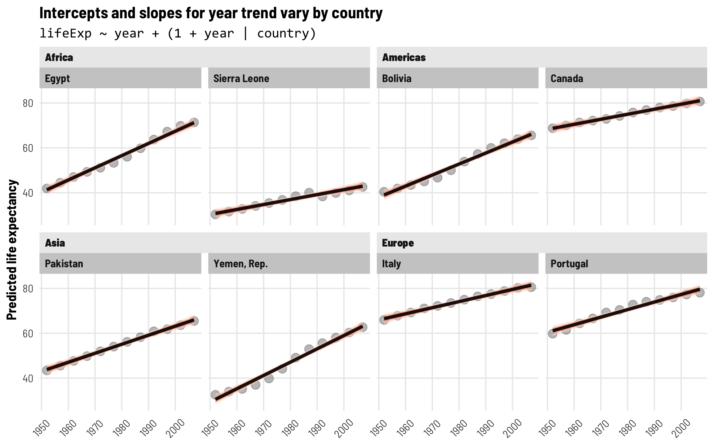
Intercepts and slopes for each country + account for year-specific differences
Ordinarily, the year + (1 + year | country) approach is sufficient for working with panel data, since the population-level year effects gets their own country-specific intercepts and slopes. However, we can do a couple extra bonus things to make our model even richer.
First, we’ll add extra year-specific random effects. Theoretically we’d want to do this if something happens to observations at a year-level that is completely unrelated to country-specific trends. One way to think about this is as year-based shocks to life expectancy. At around 1:50 in the video at the beginning of this post, Hans Rosling slows down his animation to show the impact of World War I and the Spanish Flu epidemic on global life expectancy—tons of the country circles in his animation dropped dramatically. We might see something similar in the future with 2020–21 life expectancy levels too, given the COVID-19 pandemic. That sudden drop in life expectancy across all countries is an excellent example of a year-specific change that is arguably unrelated to trends in specific continents (kind of; despite its name, not all countries fought in WWI, and Spanish Flu didn’t have the same effects in all countries, but whatever; just go with it).
To do this, we’ll add independent year-based offsets to the intercept term, or \(b_{0, \text{Year}}\):
\[ \begin{aligned} \text{Life expectancy} &= (\beta_0 + b_{0, \text{Country}} + b_{0, \text{Year}}) + (\beta_1 + b_{1, \text{Country}}) \text{Year} + \epsilon \\ b_{0, \text{Country}} &\sim \mathcal{N}(0, \tau_{0, \text{Country}}) \\ b_{1, \text{Country}} &\sim \mathcal{N}(0, \tau_{1, \text{Country}}) \\ b_{0, \text{Year}} &\sim \mathcal{N}(0, \tau_{0, \text{Year}}) \end{aligned} \]
The code version of this random effects structure is (1 | year) + (1 + year | country), which means that we’re letting the intercept (1) vary by year and letting both the intercept (1) and year vary by country. Let’s see how this model looks!
# Each country gets its own slope and intercept for the year trend
model_country_year_year <- brm(
bf(lifeExp ~ year + (1 | year) + (1 + year | country)),
data = gapminder,
chains = 4, seed = bayes_seed,
iter = 4000 # Double the number of iterations to help with convergence
)
## Start samplingtidy(model_country_year_year)
## # A tibble: 7 × 8
## effect component group term estimate std.error conf.low conf.high
## <chr> <chr> <chr> <chr> <dbl> <dbl> <dbl> <dbl>
## 1 fixed cond <NA> (Intercept) 50.2 1.24 47.8 52.6
## 2 fixed cond <NA> year 0.328 0.0246 0.278 0.377
## 3 ran_pars cond country sd__(Intercept) 12.3 0.738 11.0 13.8
## 4 ran_pars cond country sd__year 0.161 0.00988 0.143 0.182
## 5 ran_pars cond year sd__(Intercept) 1.21 0.333 0.749 2.00
## 6 ran_pars cond country cor__(Intercept).year -0.421 0.0704 -0.550 -0.272
## 7 ran_pars cond Residual sd__Observation 1.93 0.0362 1.86 2.00Fixed (population-level) effects
As always, the global population-level coefficients are the same that we’ve seen before: in 1952 the average life expectancy is 50.19 years, and it increases by 0.33 years annually after that.
Country-level variation
The random effects section of our model results is getting longer and longer! We still have the variation in our country-based intercepts and year slopes, and we have the correlation between these country-based offsets. We also have a new term: sd__(Intercept) for the year group, which corresponds to \(\tau_{0, \text{Year}}\) in the year-specific level of the model. This shows us how much life expectancy bounces around from year to year.
Year-level random effects
We can look at these new year-level offsets for the intercept using ranef() (but this time extracting data from the $year slot of the results). For whatever reason, average life expectancy in 1952 is nearly 1.5 years lower than the population-level average, but more than 1 year higher in the 1980s. If the Gapminder data went back further in time to the 1910s, we’d probably see a huge negative offset due to World War I and the Spanish Flu.
year_offsets <- ranef(model_country_year_year)$year %>%
as_tibble(rownames = "year") %>%
mutate(year = as.numeric(year) + 1952) %>%
select(year, starts_with("Estimate"))
year_offsets
## # A tibble: 12 × 2
## year Estimate.Intercept
## <dbl> <dbl>
## 1 1952 -1.44
## 2 1957 -0.623
## 3 1962 -0.159
## 4 1967 0.290
## 5 1972 0.632
## 6 1977 0.922
## 7 1982 1.25
## 8 1987 1.29
## 9 1992 0.610
## 10 1997 -0.168
## 11 2002 -1.12
## 12 2007 -1.43Where this gets really interesting is when we incorporate these different year offsets into the overall model estimate of the year trend. We can use emtrends() to calculate the predicted year slope for each of our example countries in both 1952 and 1957 (year = 0 and year = 5):
model_country_year_year %>%
emtrends(~ year + country,
var = "year",
at = list(year = c(0, 5), country = countries$country),
epred = TRUE, re_formula = NULL, allow_new_levels = TRUE)
## year country year.trend lower.HPD upper.HPD
## 0 Egypt 28.0 -14.7 67.1
## 5 Egypt 13.9 -24.4 52.2
## 0 Sierra Leone 27.7 -14.9 66.8
## 5 Sierra Leone 13.6 -24.7 51.8
## 0 Pakistan 27.8 -14.8 67.0
## 5 Pakistan 13.7 -24.5 52.1
## 0 Yemen, Rep. 28.1 -14.5 67.2
## 5 Yemen, Rep. 13.9 -24.3 52.3
## 0 Bolivia 27.9 -14.7 67.1
## 5 Bolivia 13.8 -24.4 52.1
## 0 Canada 27.7 -14.9 66.8
## 5 Canada 13.6 -24.7 51.9
## 0 Italy 27.7 -14.8 66.9
## 5 Italy 13.6 -24.7 52.0
## 0 Portugal 27.8 -14.8 67.0
## 5 Portugal 13.7 -24.5 52.0
##
## Point estimate displayed: median
## HPD interval probability: 0.95Notice how the slope of year now changes based on country and on year—it’s different (and sizably smaller) in 1957.
Visualize country-specific intercepts and slopes and year-specific intercepts
These year shocks are apparent when we plot predicted life expectancy. Each country gets its own slope and intercept like before, but now the intercept is also shifted up and down in specific years. Note how all these lines start getting a little shallower in the 1990s—something happened worldwide to shift average life expectancy outside of continent-level effects.
pred_model_country_year_year <- model_country_year_year %>%
epred_draws(newdata = expand_grid(country = countries$country,
year = unique(gapminder$year)),
re_formula = NULL) %>%
mutate(year = year + 1952) %>%
left_join(countries, by = "country")
ggplot(pred_model_country_year_year, aes(x = year, y = .epred)) +
geom_point(data = original_points, aes(y = lifeExp),
color = "grey50", size = 3, alpha = 0.5) +
stat_lineribbon(alpha = 0.5) +
scale_fill_brewer(palette = "Reds") +
labs(title = "Intercepts and slopes for year trend vary by country and intercepts vary by year",
subtitle = "lifeExp ~ year + (1 | year) + (1 + year | country)",
x = NULL, y = "Predicted life expectancy") +
guides(fill = "none") +
facet_nested_wrap(vars(continent, country), nrow = 2, strip = nested_settings) +
theme_clean() +
theme(legend.position = "bottom",
plot.subtitle = element_text(family = "Consolas"),
axis.text.x = element_text(angle = 45, hjust = 0.5, vjust = 0.5))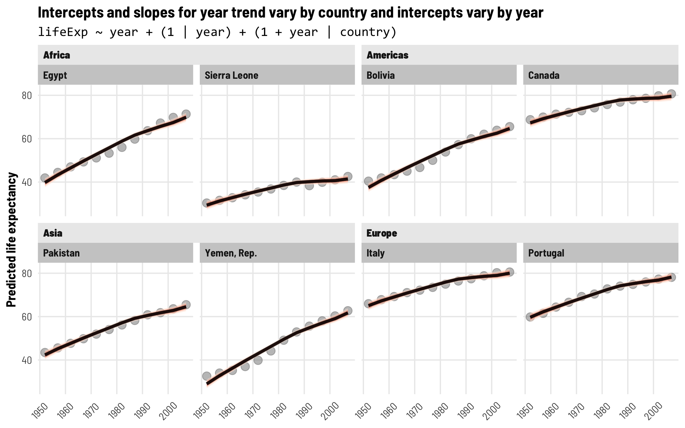
Intercepts and slopes for each country and continent
For our second bonus extension, we can incorporate random continent effects, since countries are nested in continents. This is probably overkill for this example, but it would be helpful in other situations with nested data structures.
In this case, we’re adding continent-specific effects and country-specific effects that incorporate information about parent continents. We end up with four different \(b\) terms:
- \(b_{0, \text{Continent}}\): Continent-based shifts in the intercept
- \(b_{0, \text{Continent, Country}}\): Country-within-continent-based shifts in the intercept
- \(b_{1, \text{Continent}}\): Continent-based shifts in the year slope
- \(b_{1, \text{Continent, Country}}\): Country-within-continent-based shifts in the year slope
Each of these group terms also has its own variance term (\(\tau\)) like the other models—I’m not including them below, but pretend they exist.
\[ \begin{aligned} \text{Life expectancy} =&\ (\beta_0 + b_{0, \text{Continent}} + b_{0, \text{Continent, Country}}) + \\ &\ (\beta_1 + b_{1, \text{Continent}} + b_{1, \text{Continent, Country}}) \text{Year} + \epsilon \end{aligned} \]
The code version of this nested random effects structure is (1 + year | continent / country).
However, we won’t actually fit this model here, since it takes 10+ minutes to run (likely because I’m using all the default priors). If we were fitting the model, the code would look like this:
# This takes a while! It also has a bunch of divergent transitions, and pretty
# much all the chains hit the maximum treedepth limit, but this is just a toy
# example, so whatever
model_country_continent_year <- brm(
bf(lifeExp ~ year + (1 + year | continent / country)),
data = gapminder,
chains = 4, seed = bayes_seed,
iter = 4000 # Double the number of iterations to help with convergence
)# You'd use this to calculate the continent/country effects
model_country_continent_year %>%
emmeans(~ year + continent:country,
at = list(year = c(0), country = countries$country),
nesting = "country %in% continent",
epred = TRUE, re_formula = NULL, allow_new_levels = TRUE)The model results include a bunch of new group-level terms. We get estimates for all the group-specific variances (the \(\tau\)s), listed as sd__(Intercept) and sd__year for both continent and country-in-continent. We also get the correlation between continent-level offsets and year and country-in-continent-level offsets and year.
Again, this kind of complexity is probably overkill for this situation, since country-specific offsets seem to work just fine on their own without needing broader continent-level trends. But it’s a neat approach to thinking about hierarchy in the model.
Quick digression on logging, scaling, and centering
Part of the reason the countries-nested-in-continents model takes so long to fit and runs into so many warnings and divergences is because the columns we used have values that are too large and that are distributed non-normally.
Bayesian sampling in Stan (through brms) works best and fastest when the ranges of covariates are small and centered around zero. We’ve been using year centered at 1952 (so that year 0 is 1952), and the max year in the data is 2007 (or 55), and even with that, we’re probably pushing the envelope of what Stan likes to work with.
For our main question, we want to know the relationship between GDP per capita and life expectancy. GDP per capita has a huge range with huge values. Some countries have a GDP per capita of \$1,000; some have \$40,000 or \$50,000. To make these models run quickly (and actually fit and converge), we need to shrink those values down.
We can do this in a few different ways, each with their own benefits and quirks of interpretation, which we’ll explore really quick.
- Divide by 1,000 (or any amount, really)
- Scale and center
- Log
- Log + scale and center
Here’s what the distributions of these different scaling approaches look like. Notice how all the red GDP per capita distributions are identical. The per-1000 version is shrunken down so that most values are between 0 and 30 instead of 3 and 30,000, while the centered and scaled version ranges from ≈−0.5 and 8, with 0 in the middle of the distribution. The two logged versions are also identical—the original logged GDP per capita ranges from ≈5.5–11.5 (or exp(5.5) ($148) to exp(11.5) ($98,716)), while the centered and scaled version ranges from −2 to 3, centered at 0.
different_gdps <- gapminder %>%
select(gdpPercap, gdpPercap_1000, gdpPercap_z, gdpPercap_log, gdpPercap_log_z) %>%
pivot_longer(everything()) %>%
mutate(name_nice = recode(
name, "gdpPercap" = "GDP per capita",
"gdpPercap_1000" = "GDP per capita ($1,000)",
"gdpPercap_z" = "GDP per capita (centered & scaled by one standard deviation)",
"gdpPercap_log" = "GDP per capita (logged)",
"gdpPercap_log_z" = "GDP per capita (logged; centered & scaled by one standard deviation)")) %>%
mutate(name_nice = fct_inorder(name_nice)) %>%
mutate(type = ifelse(str_detect(name, "log"), "Logged", "Original scale")) %>%
mutate(vline = ifelse(name == "gdpPercap_log", NA, 0))
ggplot(different_gdps, aes(x = value, fill = type)) +
geom_density(color = NA) +
geom_vline(data = different_gdps %>% drop_na(vline) %>%
group_by(name_nice) %>% slice(1),
aes(xintercept = vline)) +
scale_fill_viridis_d(option = "rocket", begin = 0.3, end = 0.6) +
guides(fill = "none") +
labs(x = NULL, y = NULL) +
facet_wrap(vars(name_nice), nrow = 3, scales = "free", dir = "v") +
theme_clean()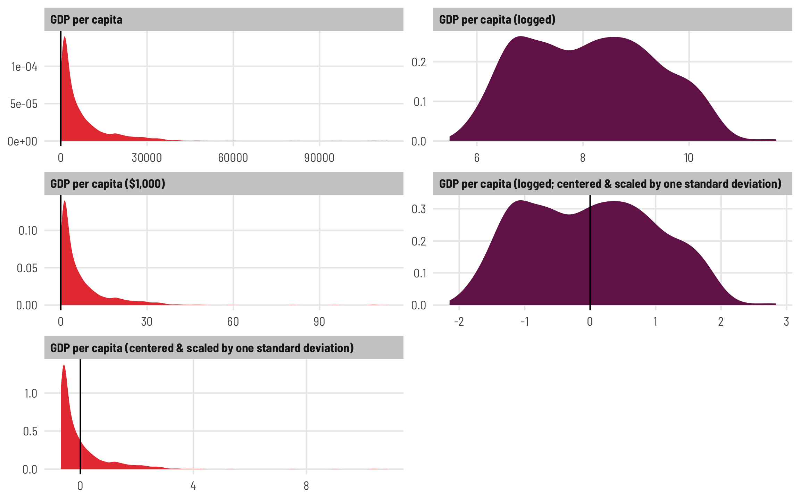
Scaling and centering
1: Divide by 1,000
One quick and easy way to shrink the GDP values down is to divide them all by some arbitrary number like 1,000 so that we work with GDP per capita in thousands of dollars. A country with a GDP per capita of \$2,000 would thus have a value of 2, and so on. Often this kind of downscaling is enough to make Stan happy, and it makes for easily interpretable results. We can interpret coefficients by saying “A \$1,000 increase in GDP per capita is associated with a \(\beta\) increase in life expectancy,” and if we really wanted, we could divide the coefficient by 1,000 to shrink it back down to the original scale and talk about \$1 increases in GDP per capita.
2: Scale and center
A better alternative that requires a little bit more post-estimation finagling is to rescale the column by subtracting the mean so that it is centered at 0, and then dividing by the standard deviation. R’s built-in scale() function does this for us. There’s no built-in unscale() function to back-transform the values to their original numbers, but we can use a little algebra to see how to unscale the values: multiply by the standard deviation and add the mean. As long as we have a mean and standard deviation, we can flip between scaled and original values:
\[ \begin{aligned} \text{Scaled value}\ &=\ \frac{\text{Original value} - \text{Mean}}{\text{Standard deviation}} \\\\ \text{Original value}\ &=\ (\text{Scaled value } \times \text{ Standard deviation})\ + \text{Mean} \end{aligned} \]
The scale() function in R doesn’t return a regular set of values. For convenience, it stores the mean and standard deviation of the values as a special kind of metadata called “attributes” in slots named scaled:center (for the mean) and scaled:scale (for the standard deviation):
some_numbers <- 1:5
scaled_numbers <- scale(some_numbers)
scaled_numbers
## [,1]
## [1,] -1.265
## [2,] -0.632
## [3,] 0.000
## [4,] 0.632
## [5,] 1.265
## attr(,"scaled:center")
## [1] 3
## attr(,"scaled:scale")
## [1] 1.58We can access and extract those attributes with the attributes function, which converts them to a more easily accessible list. Note that when we reference scaled:center or scaled:scale we have to use backticks around the names—that’s because the : character isn’t normally allowed as an object name:
scaled_numbers_mean_sd <- attributes(scaled_numbers)
scaled_numbers_mean_sd
## $dim
## [1] 5 1
##
## $`scaled:center`
## [1] 3
##
## $`scaled:scale`
## [1] 1.58
scaled_numbers_mean_sd$`scaled:center`
## [1] 3
scaled_numbers_mean_sd$`scaled:scale`
## [1] 1.58To unscale some_numbers, we can multiply by the standard deviation and add the mean:
(scaled_numbers * scaled_numbers_mean_sd$`scaled:scale`) +
scaled_numbers_mean_sd$`scaled:center`
## [,1]
## [1,] 1
## [2,] 2
## [3,] 3
## [4,] 4
## [5,] 5
## attr(,"scaled:center")
## [1] 3
## attr(,"scaled:scale")
## [1] 1.58The same thing works with the actual data. When we initially loaded and cleaned the data, we used scale() to scale down all the different GDP columns to versions with a _z suffix, and we can see that they’re all a little different from the other columns:
glimpse(gapminder)
## Rows: 1,680
## Columns: 13
## $ country <fct> "Afghanistan", "Afghanistan", "Afghanistan", "Afghanistan", "Af…
## $ continent <fct> Asia, Asia, Asia, Asia, Asia, Asia, Asia, Asia, Asia, Asia, Asi…
## $ year <dbl> 0, 5, 10, 15, 20, 25, 30, 35, 40, 45, 50, 55, 0, 5, 10, 15, 20,…
## $ lifeExp <dbl> 28.8, 30.3, 32.0, 34.0, 36.1, 38.4, 39.9, 40.8, 41.7, 41.8, 42.…
## $ pop <int> 8425333, 9240934, 10267083, 11537966, 13079460, 14880372, 12881…
## $ gdpPercap <dbl> 779, 821, 853, 836, 740, 786, 978, 852, 649, 635, 727, 975, 160…
## $ gdpPercap_1000 <dbl> 0.779, 0.821, 0.853, 0.836, 0.740, 0.786, 0.978, 0.852, 0.649, …
## $ gdpPercap_log <dbl> 6.66, 6.71, 6.75, 6.73, 6.61, 6.67, 6.89, 6.75, 6.48, 6.45, 6.5…
## $ gdpPercap_z <dbl[,1]> <matrix[30 x 1]>
## $ gdpPercap_1000_z <dbl[,1]> <matrix[30 x 1]>
## $ gdpPercap_log_z <dbl[,1]> <matrix[30 x 1]>
## $ year_orig <int> 1952, 1957, 1962, 1967, 1972, 1977, 1982, 1987, 1992, 1997,…
## $ highlight <lgl> FALSE, FALSE, FALSE, FALSE, FALSE, FALSE, FALSE, FALSE, FAL…
gapminder %>%
select(country, continent, year_orig, gdpPercap, gdpPercap_z) %>%
head()
## # A tibble: 6 × 5
## country continent year_orig gdpPercap gdpPercap_z[,1]
## <fct> <fct> <int> <dbl> <dbl>
## 1 Afghanistan Asia 1952 779. -0.640
## 2 Afghanistan Asia 1957 821. -0.636
## 3 Afghanistan Asia 1962 853. -0.632
## 4 Afghanistan Asia 1967 836. -0.634
## 5 Afghanistan Asia 1972 740. -0.644
## 6 Afghanistan Asia 1977 786. -0.639That’s because (1) scale() returns values as a 1-column matrix for whatever reason, and (2) the special mean and standard deviation metadata attributes are stored in that matrix. We can access those attributes like normal:
gdp_mean_sd <- attributes(gapminder$gdpPercap_z)
gdp_mean_sd
## $dim
## [1] 1680 1
##
## $`scaled:center`
## [1] 7052
##
## $`scaled:scale`
## [1] 9804Just for fun, we can verify that these values are the same as the average and standard deviation of GDP per capita:
gapminder %>%
summarize(avg = mean(gdpPercap),
sd = sd(gdpPercap))
## # A tibble: 1 × 2
## avg sd
## <dbl> <dbl>
## 1 7052. 9804.They’re the same!
To make sure that we really can scale and unscale this stuff, let’s look at the first few rows of the data and multiply the scaled gdpPercap_z column by the attributes we extracted:
gapminder %>%
slice(1:5) %>%
select(gdpPercap, gdpPercap_z) %>%
mutate(unscaled = gdpPercap_z * gdp_mean_sd$`scaled:scale` + gdp_mean_sd$`scaled:center`)
## # A tibble: 5 × 3
## gdpPercap gdpPercap_z[,1] unscaled[,1]
## <dbl> <dbl> <dbl>
## 1 779. -0.640 779.
## 2 821. -0.636 821.
## 3 853. -0.632 853.
## 4 836. -0.634 836.
## 5 740. -0.644 740.They’re the same!
Unscaling regression coefficients is a little different. We don’t need to add the mean, since we’re working with marginal effects (i.e. the effect of adding one additional dollar of GDP per capita), and instead of multiplying by the standard deviation, we divide by it. Once again, just to make sure we can unscale correctly, we can run a couple models: one with GDP per capita in the thousands, and one with the scaled and centered GDP per capita. In theory, if we divide the coefficient from the second model by the standard deviation and multiply it by 1,000 (to scaled it up so it shows GDP per capita in the thousands), we’ll get the same value:
model_super_simple <- lm(lifeExp ~ gdpPercap_1000, data = gapminder)
tidy(model_super_simple) # 0.755
## # A tibble: 2 × 5
## term estimate std.error statistic p.value
## <chr> <dbl> <dbl> <dbl> <dbl>
## 1 (Intercept) 53.9 0.317 170. 0
## 2 gdpPercap_1000 0.755 0.0262 28.8 1.53e-148
model_super_simple_z <- lm(lifeExp ~ gdpPercap_z, data = gapminder)
tidy(model_super_simple_z) # 7.41
## # A tibble: 2 × 5
## term estimate std.error statistic p.value
## <chr> <dbl> <dbl> <dbl> <dbl>
## 1 (Intercept) 59.3 0.257 231. 0
## 2 gdpPercap_z 7.41 0.257 28.8 1.53e-148
# Can we get the 7.41 coefficient from the centered/scaled model to turn into
# 0.755 from the original model?
tidy(model_super_simple_z) %>%
filter(term == "gdpPercap_z") %>%
mutate(estimate_unscaled_1000 = estimate / gdp_mean_sd$`scaled:scale` * 1000)
## # A tibble: 1 × 6
## term estimate std.error statistic p.value estimate_unscaled_1000
## <chr> <dbl> <dbl> <dbl> <dbl> <dbl>
## 1 gdpPercap_z 7.41 0.257 28.8 1.53e-148 0.755They’re the same!
Logging
3: Log
Stan also seems to like to work with more normally distributed variables. With GDP per capita, lots of countries have a low value, and a few have really high values, resulting in a skewed distribution that can sometimes cause issues when sampling. To address this, we can take the log of GDP per capita and think about changes in orders of magnitude (i.e. moving from \$300 to \$3,000 to \$30,000, and so on) rather than linear changes. Back-transforming logged values is easy—exponentiate the value (i.e. \(e^\text{logged value}\)) if you’re using a natural log, which is what R does by default when you use log():
log(5000)
## [1] 8.52
exp(log(5000))
## [1] 5000We can verify this works with our data:
gapminder %>%
slice(1:5) %>%
select(gdpPercap, gdpPercap_log) %>%
mutate(unlogged = exp(gdpPercap_log))
## # A tibble: 5 × 3
## gdpPercap gdpPercap_log unlogged
## <dbl> <dbl> <dbl>
## 1 779. 6.66 779.
## 2 821. 6.71 821.
## 3 853. 6.75 853.
## 4 836. 6.73 836.
## 5 740. 6.61 740.Working with logged variables in regression, though, is a little trickier since there’s no consistent way to back-transform the logged effects to their original scale—with logs, we’re working with orders of magnitude, so the coefficient represents a different kind of change in the outcome. But it’s okay! We can interpret things using percent changes rather than actual values. This response at Cross Validated is my favorite resource for remembering how to interpret regression results with logs in them (this resource is helpful too).
When we have a regression model with a logged predictor, we talk about percent increases in the predictor variables. In a model like this, for instance…
\[ \text{Outcome} = \beta_0 + \beta_1 \log(\text{Predictor}) + \epsilon \]
…we’d say “A 1% increase in the predictor is associated with a (\(\beta_1\) / 100) unit increase in the outcome.” If we want to think about larger increases in the predictor, like 10%, we can divide the \(\beta_1\) coefficient by 10 instead.
Here’s what this looks like with logged GDP per capita:
model_super_simple_log <- lm(lifeExp ~ gdpPercap_log, data = gapminder)
tidy(model_super_simple_log) # 8.38
## # A tibble: 2 × 5
## term estimate std.error statistic p.value
## <chr> <dbl> <dbl> <dbl> <dbl>
## 1 (Intercept) -8.94 1.25 -7.16 1.17e-12
## 2 gdpPercap_log 8.38 0.152 55.3 0In this model, a one-unit increase in logged GDP per capita is associated with a 8.38 year increase in life expectancy. But thinking about increases in logged values is weird—we can think about percent changes instead.
The 8.38 coefficient by itself shows the effect of a 100% increase in GDP per capita, which is huge, so we can scale it down to see the effect of a 1% increase (if we divide by 100) or a 10% increase (if we divide by 10). A 10% increase in income for country with a GDP per capita of \$1,000 would boost its income to $1,100 (1000 * 1.1), which is a \$100 change. For a country with a GDP per capita of \$10,000, a 10% increase would result in $11,000 (10000 * 1.1), or a \$1,000 boost. According to our model, both of those changes (\$100 for a poor country, \$1,000 for a wealthier country) should result in the same change in life expectancy.
We’ll consider 10% increases since those are more sizable (e.g., a 1% increase in a country with a GDP per capita of \$1,000 would lead to $1,010—that \$10 increase is hardly going to move the needle in life expectancy).
Thus, according to this not-very-great-at-all model, a 10% increase in GDP per capita is associated with a 0.838 (8.38 / 10) year increase in life expectancy, on average.
4: Log + scale and center
And finally, since Stan likes working with centered variables, we can also scale and center logged values. If we want to interpret them we have to back-transform them by rescaling them up with the standard deviation. When we created the scaled version of logged GDP per capita at the beginning of this post, R stored the mean and standard deviation as metadata attributes. We can extract those and scale things back up as needed:
attributes(gapminder$gdpPercap_log_z)
## $dim
## [1] 1680 1
##
## $`scaled:center`
## [1] 8.14
##
## $`scaled:scale`
## [1] 1.23The effect of wealth on health, accounting for country and time
Okay, phew. So far we’ve looked at how to model time trends across countries and continents with multilevel models, and we’ve seen how to scale and unscale variables to work better with Stan and brms. We’re really actually interested in Hans Rosling’s and the Gapminder Project’s original question—what’s the relationship between wealth and health, or GDP per capita and life expectancy? This fancy multilevel structure so far lets us model the time relationships, but we can use that year trend to account for time in more complex models.
For instance, we know from the Gapminder video that life expectancy increases as wealth increases, but that relationship differs by country. Visualizing the across-time trajectories of each country in the data helps with the intuition here. Countries like Canada, Italy, and Portugal have fairly steady trajectories over time, while places like Bolivia, Egypt, and Yemen see really steep increases in life expectancy. Sierra Leone tragically backtracks in both income and life expectancy in the 1990s.
ggplot(gapminder, aes(x = gdpPercap, y = lifeExp, color = continent)) +
geom_point(size = 0.5, alpha = 0.25) +
geom_smooth(method = "lm", aes(color = NULL), color = "grey60", size = 0.5,
se = FALSE, show.legend = FALSE) +
annotate(geom = "label", label = "Global trend", x = 64000, y = 84,
size = 3, color = "grey60") +
geom_path(aes(group = country, size = highlight),
arrow = arrow(type = "open", angle = 30, length = unit(0.75, "lines")),
show.legend = FALSE) +
geom_label_repel(data = filter(gapminder, year == 15, highlight == TRUE),
aes(label = country), size = 3, seed = 1234,
show.legend = FALSE,
family = "Barlow Semi Condensed", fontface = "bold") +
scale_size_manual(values = c(0.075, 1), guide = "none") +
scale_color_okabe_ito(order = c(2, 3, 6, 1),
guide = guide_legend(override.aes = list(size = 3, alpha = 1))) +
scale_x_log10(labels = dollar_format(accuracy = 1), breaks = 125 * (2^(1:10))) +
labs(x = "GDP per capita (log)", y = "Life expectancy", color = "Continent") +
theme_clean() +
theme(legend.position = "bottom")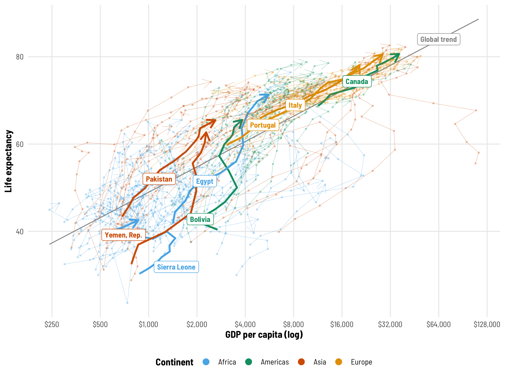
We’re interested in the effect of GDP per capita on life expectancy, but getting a single value for this is a little tricky. The grey line here shows the global trend—on average, health and wealth clearly move together. But that’s not a universal effect. Look at Italy, for instance—its slope is relatively constant over time. Egypt’s wealth slope gets steeper and shallower over time, while Sierra Leone reverses at some points. For the rest of this post, we’ll explore how to calculate and visualize these different country-specific and global effects.
In the first part of this guide, we cared about average life expectancy over time, so we plotted predicted life expectancy. Now, though, we care about the GDP effect, or the GDP coefficient in a model like lifeExp ~ gdpPercap, so we’ll work with and visualize that throughout the rest of this guide. We’ll look at the posterior distribution of this coefficient to see how much this wealth effect varies. We’ll use the emtrends() function from emmeans throughout, since it’s designed to calculate instantaneous average marginal effects (see this for more on average marginal effects).
We’ll use the centered version of GDP per capita to speed up model fitting, which means we’ll need to unscale coefficients to interpret them. We’ll also interpret coefficients using \$1,000 increases in GDP per capita (since a \$1 increase in wealth won’t lead to much of a difference in life expectancy). As these models get more complex, we’ll switch from regular GDP per capita to logged GDP per capita for the sake of computation.
Let’s extract the mean and standard deviation from both centered GDP per capita and centered logged GDP per capita so we can use them below:
gdp_mean_sd <- attributes(gapminder$gdpPercap_z)
gdp_mean <- gdp_mean_sd$`scaled:center`
gdp_sd <- gdp_mean_sd$`scaled:scale`
gdp_log_mean_sd <- attributes(gapminder$gdpPercap_log_z)
gdp_log_mean <- gdp_log_mean_sd$`scaled:center`
gdp_log_sd <- gdp_log_mean_sd$`scaled:scale`Regular regression
Like we did when we looked at just year trends, we’ll start with a regular old non-multilevel regression model to help get our bearings. We’ll actually run two different models: one with scaled and centered GDP per capita and one with scaled and centered logged GDP per capita, mostly to get used to scaling the coefficients up. These simple models fit just fine in under a second, but as we add more complexity, the non-logged GDP per capita gets really unstable and unwieldy, so we’ll shift to the logged version.
model_gdp_boring <- brm(
bf(lifeExp ~ gdpPercap_z + year),
data = gapminder,
chains = 4, seed = bayes_seed
)
## Start sampling
model_gdp_boring_log <- brm(
bf(lifeExp ~ gdpPercap_log_z + year),
data = gapminder,
chains = 4, seed = bayes_seed
)
## Start samplingtidy(model_gdp_boring)
## # A tibble: 4 × 8
## effect component group term estimate std.error conf.low conf.high
## <chr> <chr> <chr> <chr> <dbl> <dbl> <dbl> <dbl>
## 1 fixed cond <NA> (Intercept) 52.6 0.453 51.7 53.4
## 2 fixed cond <NA> gdpPercap_z 6.46 0.246 6.00 6.95
## 3 fixed cond <NA> year 0.244 0.0138 0.217 0.271
## 4 ran_pars cond Residual sd__Observation 9.71 0.169 9.40 10.0
tidy(model_gdp_boring_log)
## # A tibble: 4 × 8
## effect component group term estimate std.error conf.low conf.high
## <chr> <chr> <chr> <chr> <dbl> <dbl> <dbl> <dbl>
## 1 fixed cond <NA> (Intercept) 53.8 0.323 53.2 54.5
## 2 fixed cond <NA> gdpPercap_log_z 9.54 0.174 9.20 9.88
## 3 fixed cond <NA> year 0.198 0.0101 0.178 0.218
## 4 ran_pars cond Residual sd__Observation 6.92 0.118 6.69 7.15We can look at the results, but the coefficients for the scaled variables are a little tricky to interpret here. Technically they represent the increase in life expectancy that follows a 1 standard deviation increase in GDP per capita (not logged and logged), but I don’t think in standard deviations and I prefer to shift these coefficients back to their original scales. To do that we just need to divide by the standard deviation of the original columns. We’ll also multiply the GDP per capita coefficient by 1,000 so we can talk about changes in life expectancy that follow a \$1,000 increase in wealth, and we’ll divide the logged GDP per capita coefficient by 10 so we can talk about changes in life expectancy that follow a 10% increase in wealth. This neat combination of across() and ifelse() inside mutate() lets us rescale multiple columns for just a single row, which is cool.
tidy(model_gdp_boring) %>%
mutate(across(c(estimate, std.error, conf.low, conf.high),
~ifelse(term == "gdpPercap_z", (. / gdp_sd) * 1000, .)))
## # A tibble: 4 × 8
## effect component group term estimate std.error conf.low conf.high
## <chr> <chr> <chr> <chr> <dbl> <dbl> <dbl> <dbl>
## 1 fixed cond <NA> (Intercept) 52.6 0.453 51.7 53.4
## 2 fixed cond <NA> gdpPercap_z 0.659 0.0251 0.612 0.709
## 3 fixed cond <NA> year 0.244 0.0138 0.217 0.271
## 4 ran_pars cond Residual sd__Observation 9.71 0.169 9.40 10.0
tidy(model_gdp_boring_log) %>%
mutate(across(c(estimate, std.error, conf.low, conf.high),
~ifelse(term == "gdpPercap_log_z", (. / gdp_log_sd), .)))
## # A tibble: 4 × 8
## effect component group term estimate std.error conf.low conf.high
## <chr> <chr> <chr> <chr> <dbl> <dbl> <dbl> <dbl>
## 1 fixed cond <NA> (Intercept) 53.8 0.323 53.2 54.5
## 2 fixed cond <NA> gdpPercap_log_z 7.73 0.141 7.46 8.01
## 3 fixed cond <NA> year 0.198 0.0101 0.178 0.218
## 4 ran_pars cond Residual sd__Observation 6.92 0.118 6.69 7.15Based on this model, when year is 0 (or in 1952) and when a country’s GDP per capita is \$0, the average life expectancy is 52.55 years on average. It increases by 0.24 years annually after that, holding income constant, and it increases by 0.66 years for every \$1,000 increase in wealth, holding time constant.
If we look at logged GDP per capita, we see a similar story: a 10% increase in GDP per capita is associated with a 0.773 (7.73 / 10) year increase in life expectancy, holding time constant.
ame_model_gdp_boring <- model_gdp_boring %>%
emtrends(~ 1,
var = "gdpPercap_z",
at = list(year = 0),
epred = TRUE, re_formula = NULL)
pred_ame_model_gdp_boring <- ame_model_gdp_boring %>%
gather_emmeans_draws() %>%
mutate(.value = .value / gdp_sd * 1000) %>%
mutate(fake_facet_title = "GDP per capita")
plot_ame_gdp <- ggplot(pred_ame_model_gdp_boring, aes(x = .value)) +
stat_halfeye(fill = palette_okabe_ito(5),
.width = c(0.8, 0.95)) +
labs(x = paste0("Average marginal effect on life expectancy", "\n",
"of a $1,000 increase in GDP per capita"),
y = "Density") +
facet_wrap(vars(fake_facet_title)) +
theme_clean() +
theme(strip.text = element_text(size = rel(1.1)))
ame_model_gdp_boring_log <- model_gdp_boring_log %>%
emtrends(~ 1,
var = "gdpPercap_log_z",
at = list(year = 0),
epred = TRUE, re_formula = NULL)
pred_ame_model_gdp_boring_log <- ame_model_gdp_boring_log %>%
gather_emmeans_draws() %>%
mutate(.value = .value / gdp_log_sd / 10) %>%
mutate(fake_facet_title = "Logged GDP per capita")
plot_ame_gdp_log <- ggplot(pred_ame_model_gdp_boring_log, aes(x = .value)) +
stat_halfeye(fill = palette_okabe_ito(5),
.width = c(0.8, 0.95)) +
labs(x = paste0("Average marginal effect on life expectancy", "\n",
"of a 10% increase in GDP per capita"),
y = "Density") +
facet_wrap(vars(fake_facet_title)) +
theme_clean() +
theme(strip.text = element_text(size = rel(1.1)))
(plot_ame_gdp + plot_ame_gdp_log) +
plot_annotation(title = paste0("Average marginal effect of GDP per capita", "\n",
"(includes year trend with no country-based variation)"),
subtitle = "lifeExp ~ gdpPercap_log_z + year",
caption = "80% and 95% credible intervals shown with error bar",
theme = theme_clean() + theme(plot.subtitle = element_text(family = "Consolas")))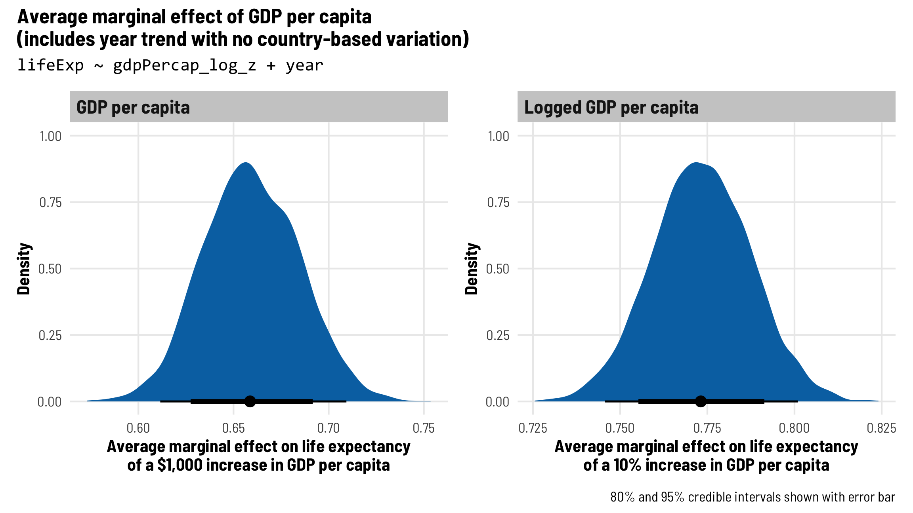
Each country gets its own intercept and GDP slope
As we saw in the plot with the different across-time trajectories, each country has a slightly different relationship between wealth and life expectancy. Using multilevel modeling, we can incorporate country-specific offsets into both the intercept (\(b_{0, \text{Country}}\)) and the fixed GDP per capita effect (\(b_{1, \text{Country}}\)). As always, each of these country-specific offsets has its own variation that we call \(\tau\).
\[ \begin{aligned} \text{Life expectancy} &= (\beta_0 + b_{0, \text{Country}}) + (\beta_1 + b_{1, \text{Country}}) \text{GDP} + \beta_2 \text{Year} + \epsilon \\ b_{0, \text{Country}} &\sim \mathcal{N}(0, \tau_0) \\ b_{1, \text{Country}} &\sim \mathcal{N}(0, \tau_1) \end{aligned} \]
The syntax for this random effects term is (1 + gdpPercap_z | country)—we’re letting both the intercept (1) and GDP per capita vary by country. We’ll use the scaled versions of both regular GDP per capita and logged GDP per capita.
Note the addition of the decomp = "QR" argument here—that tells brms to use QR decomposition for decorrelating highly correlated covariates (like year and GDP across country), and it can speed up computation (see here for more about that).
model_gdp_country_only <- brm(
bf(lifeExp ~ gdpPercap_z + year + (1 + gdpPercap_z | country),
decomp = "QR"),
data = gapminder,
chains = 4, seed = bayes_seed,
threads = threading(2) # Two CPUs per chain to speed things up
)
## Start sampling
model_gdp_country_only_log <- brm(
bf(lifeExp ~ gdpPercap_log_z + year + (1 + gdpPercap_log_z | country),
decomp = "QR"),
data = gapminder,
chains = 4, seed = bayes_seed,
threads = threading(2) # Two CPUs per chain to speed things up
)
## Start samplingAdding this country-level complexity starts slowing down the regular GDP version substantially—it takes twice as long to fit the model with gdpPercap_z than it does gdpPercap_log_z, and there are issues with divergent chains and model fit. This is a great example of Andrew Gelman’s folk theorem of statistical computing: “when you have computational problems, often there’s a problem with your model.” We could fix this by using more specific priors, using more iterations in the chains, or adjusting some of Stan’s parameters like adapt_delta, but for the sake of this example, we won’t.
# Model with regular GDP per capita
rstan::get_elapsed_time(model_gdp_country_only$fit) %>%
as_tibble(rownames = "chain") %>% mutate(total_seconds = warmup + sample)
## # A tibble: 4 × 4
## chain warmup sample total_seconds
## <chr> <dbl> <dbl> <dbl>
## 1 chain:1 27.6 30.3 57.8
## 2 chain:2 31.9 27.9 59.9
## 3 chain:3 28.3 28.5 56.9
## 4 chain:4 29.4 28.1 57.5
# Model with logged GDP per capita
rstan::get_elapsed_time(model_gdp_country_only_log$fit) %>%
as_tibble(rownames = "chain") %>% mutate(total_seconds = warmup + sample)
## # A tibble: 4 × 4
## chain warmup sample total_seconds
## <chr> <dbl> <dbl> <dbl>
## 1 chain:1 14.4 13.8 28.2
## 2 chain:2 15.0 13.3 28.3
## 3 chain:3 14.7 13.7 28.4
## 4 chain:4 14.4 13.9 28.2Fixed (population-level) effects
The global population-level coefficients are similar to what we saw in the basic model without random country effects: holding year trends constant, life expectancy increases by 1.17 years for every \$1,000 increase in wealth and 0.34 years for every 10% increase in wealth, on average.
# Unscale both the GDP coefficient and the GDP random variance coefficient
tidy(model_gdp_country_only) %>%
mutate(across(c(estimate, std.error, conf.low, conf.high),
~ifelse(term %in% c("gdpPercap_z", "sd__gdpPercap_z"),
(. / gdp_sd) * 1000, .)))
## # A tibble: 7 × 8
## effect component group term estim…¹ std.e…² conf.…³ conf.…⁴
## <chr> <chr> <chr> <chr> <dbl> <dbl> <dbl> <dbl>
## 1 fixed cond <NA> (Intercept) 57.1 1.22 54.8 59.5
## 2 fixed cond <NA> gdpPercap_z 1.17 0.208 0.793 1.59
## 3 fixed cond <NA> year 0.310 0.00618 0.298 0.322
## 4 ran_pars cond country sd__(Intercept) 9.94 0.918 8.35 11.9
## 5 ran_pars cond country sd__gdpPercap_z 1.73 0.210 1.33 2.14
## 6 ran_pars cond country cor__(Intercept).gdpPercap_z 0.201 0.154 -0.118 0.477
## 7 ran_pars cond Residual sd__Observation 2.92 0.0584 2.81 3.04
## # … with abbreviated variable names ¹estimate, ²std.error, ³conf.low, ⁴conf.high
tidy(model_gdp_country_only_log) %>%
mutate(across(c(estimate, std.error, conf.low, conf.high),
~ifelse(term %in% c("gdpPercap_log_z", "sd__gdpPercap_log_z"),
(. / gdp_log_sd), .)))
## # A tibble: 7 × 8
## effect component group term estim…¹ std.e…² conf.…³ conf.…⁴
## <chr> <chr> <chr> <chr> <dbl> <dbl> <dbl> <dbl>
## 1 fixed cond <NA> (Intercept) 53.7 0.976 51.8 55.6
## 2 fixed cond <NA> gdpPercap_log_z 3.40 0.576 2.27 4.52
## 3 fixed cond <NA> year 0.283 0.00628 0.270 0.295
## 4 ran_pars cond country sd__(Intercept) 11.2 0.759 9.80 12.8
## 5 ran_pars cond country sd__gdpPercap_log_z 5.69 0.443 4.88 6.62
## 6 ran_pars cond country cor__(Intercept).gdpPercap_… -0.277 0.101 -0.462 -0.0677
## 7 ran_pars cond Residual sd__Observation 2.76 0.0532 2.66 2.87
## # … with abbreviated variable names ¹estimate, ²std.error, ³conf.low, ⁴conf.highCountry-level variation
We also have a few random effects terms that we can interpret. The variance for the intercept (sd__(Intercept)) corresponds to \(\tau_0\) and shows us how much life expectancy bounces around across countries. We can also see what proportion this country-level variation contributes to the the total residual variation of the model. For the GDP per capita model, the country structure contributes 77% (9.94 / (9.94 + 2.92)) of the total variance in life expectancy, while it contributes 80% (11.16 / (11.16 + 2.76)) in the logged GDP per capita model.
The sd__gdpPercap_z term is \(\tau_1\) and shows the country-specific variation in the GDP effect. This is smaller than the intercept variance, but that’s because the GDP effect is a slope that measures the marginal change in life expectancy as wealth increases by one unit (or $1,000 here), not life expectancy itself. (We unscaled the values for sd__gdpPercap_z and sd__gdpPercap_log_z here too, like we did their actual fixed coefficients.)
Finally, we have a term that shows the correlation of the country-specific intercepts and slopes. In the regular GDP per capita model, we see a correlation of 0.2, which means that countries with lower intercepts are associated with lower GDP effects—countries that start out poor in 1952 grow slower. This correlation reverses in the logged GDP per capita model, where we have a correlation of -0.28, which implies that countries with lower intercepts are associated with bigger GDP effects—countries that start out poor in 1952 grow faster. Why the reversal? Haha I don’t know. It could be because the two measures of GDP capture different things: the logged version shows changes in orders of magnitude, while the regular version shows changes in dollar amounts. Somehow that difference makes the correlation flip. Weird.
Country-level random effects
For fun, we can look at the country-level offsets for the intercept and the GDP slope.
ranef(model_gdp_country_only)$country %>%
as_tibble(rownames = "country") %>%
filter(country %in% countries$country) %>%
select(country, starts_with("Estimate")) %>%
# Unscale the GDP offsets
mutate(Estimate.gdpPercap_z = Estimate.gdpPercap_z / gdp_sd * 1000)
## # A tibble: 8 × 3
## country Estimate.Intercept Estimate.gdpPercap_z
## <chr> <dbl> <dbl>
## 1 Bolivia -0.587 1.90
## 2 Canada 11.7 -1.34
## 3 Egypt 1.85 1.66
## 4 Italy 8.92 -1.24
## 5 Pakistan 0.895 0.912
## 6 Portugal 4.37 -1.09
## 7 Sierra Leone -9.42 2.07
## 8 Yemen, Rep. 9.64 4.04We can also look at the already-combined fixed effect + random offset for country-specific intercepts and slopes. The intercept and the slope are different in each country, while the year coefficient is the same, as expected:
coef(model_gdp_country_only)$country %>%
as_tibble(rownames = "country") %>%
filter(country %in% countries$country) %>%
select(country, starts_with("Estimate")) %>%
# Unscale the GDP offsets
mutate(Estimate.gdpPercap_z = Estimate.gdpPercap_z / gdp_sd * 1000)
## # A tibble: 8 × 4
## country Estimate.Intercept Estimate.gdpPercap_z Estimate.year
## <chr> <dbl> <dbl> <dbl>
## 1 Bolivia 56.5 3.07 0.310
## 2 Canada 68.8 -0.167 0.310
## 3 Egypt 59.0 2.83 0.310
## 4 Italy 66.1 -0.0712 0.310
## 5 Pakistan 58.0 2.08 0.310
## 6 Portugal 61.5 0.0801 0.310
## 7 Sierra Leone 47.7 3.24 0.310
## 8 Yemen, Rep. 66.8 5.21 0.310Visualize results
We can see the full posterior distributions for these country-specific GDP effects to get a sense of their variation. Looking at regular GDP shows some interesting trends—and reveals some potential issues with the model. In all countries except Canada, Italy, and Portugal, a \$1,000 increase in GDP per capita—holding all other factors constant—is associated with a 2–5 year increase in life expectancy. This difference is “statistically significant” if we want to use that kind of frequentist language—the credible intervals for all these effects are fairly far from 0. Canada, Italy, and Portugal, however, see no practical GDP effect. Their slopes are essentially zero, and they’re precisely estimated around zero (hence those really tall peaks). This could be an artifact of the model—those three countries had already-high levels of income and Stan struggles with extremes like that.
ame_model_gdp_country_only <- model_gdp_country_only %>%
emtrends(~ country,
var = "gdpPercap_z",
at = list(year = 0, country = countries$country),
epred = TRUE, re_formula = NULL)
pred_ame_model_gdp_country_only <- ame_model_gdp_country_only %>%
gather_emmeans_draws() %>%
mutate(.value = .value / gdp_sd * 1000) %>%
left_join(countries, by = "country")
ggplot(pred_ame_model_gdp_country_only, aes(x = .value)) +
stat_halfeye(aes(fill = continent)) +
geom_vline(xintercept = 0) +
scale_fill_okabe_ito(order = c(2, 3, 6, 1), guide = "none") +
labs(title = paste0("Average marginal effect of GDP per capita", "\n",
"(intercepts and slope of GDP per capita by country)"),
subtitle = "lifeExp ~ gdpPercap_z + year + (1 + gdpPercap_z | country)",
x = paste0("Average marginal effect on life expectancy", "\n",
"of a $1,000 increase in GDP per capita"),
y = "Density",
caption = "80% and 95% credible intervals shown with error bar") +
facet_nested_wrap(vars(continent, country), nrow = 2, strip = nested_settings) +
theme_clean() +
theme(plot.subtitle = element_text(family = "Consolas"))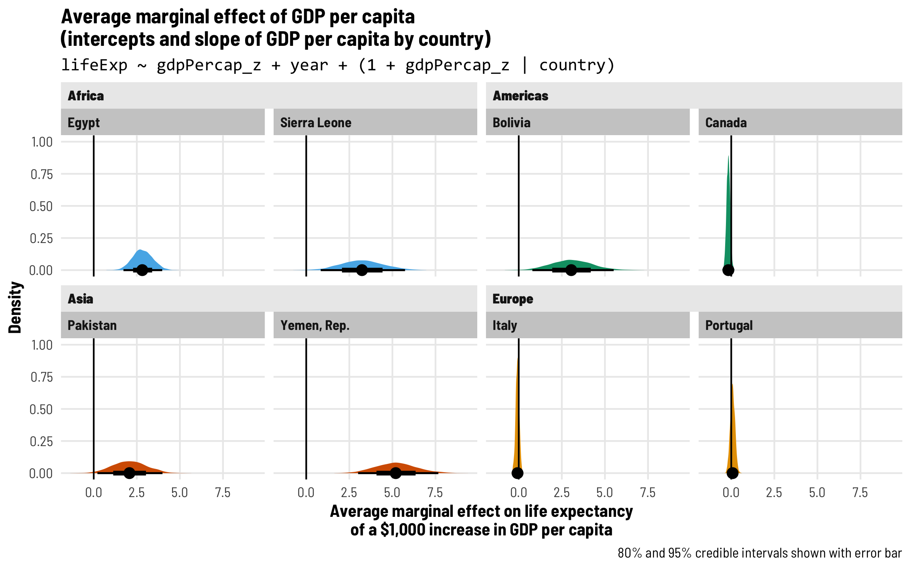
We get some more normal looking distributions when looking at the effect of logged GDP per capita instead. Canada, Italy, and Portugal are all still apparent null effects, since their credible intervals include zero, while all other countries have positive effects. A 10% increase in GDP per capita is associated with a 0.5ish to 1.2ish year increase in life expectancy, on average.
ame_model_gdp_country_only_log <- model_gdp_country_only_log %>%
emtrends(~ country,
var = "gdpPercap_log_z",
at = list(year = 0, country = countries$country),
epred = TRUE, re_formula = NULL)
ame_model_gdp_country_only_log
## country gdpPercap_log_z.trend lower.HPD upper.HPD
## Egypt 11.37 7.41 15.22
## Sierra Leone 6.42 0.88 12.51
## Pakistan 5.91 1.67 9.82
## Yemen, Rep. 14.33 10.14 18.37
## Bolivia 13.59 5.33 22.11
## Canada -1.90 -6.58 2.82
## Italy 0.14 -3.38 3.43
## Portugal 2.32 -0.67 5.33
##
## Point estimate displayed: median
## HPD interval probability: 0.95
pred_ame_model_gdp_country_only_log <- ame_model_gdp_country_only_log %>%
gather_emmeans_draws() %>%
mutate(.value = .value / gdp_log_sd / 10) %>%
left_join(countries, by = "country")
ggplot(pred_ame_model_gdp_country_only_log, aes(x = .value)) +
stat_halfeye(aes(fill = continent)) +
geom_vline(xintercept = 0) +
scale_fill_okabe_ito(order = c(2, 3, 6, 1), guide = "none") +
labs(title = paste0("Average marginal effect of GDP per capita", "\n",
"(intercepts and slope of GDP per capita by country)"),
subtitle = "lifeExp ~ gdpPercap_z + year + (1 + gdpPercap_z | country)",
x = paste0("Average marginal effect on life expectancy", "\n",
"of a 10% increase in GDP per capita"),
y = "Density",
caption = "80% and 95% credible intervals shown with error bar") +
facet_nested_wrap(vars(continent, country), nrow = 2, strip = nested_settings) +
theme_clean() +
theme(plot.subtitle = element_text(family = "Consolas"))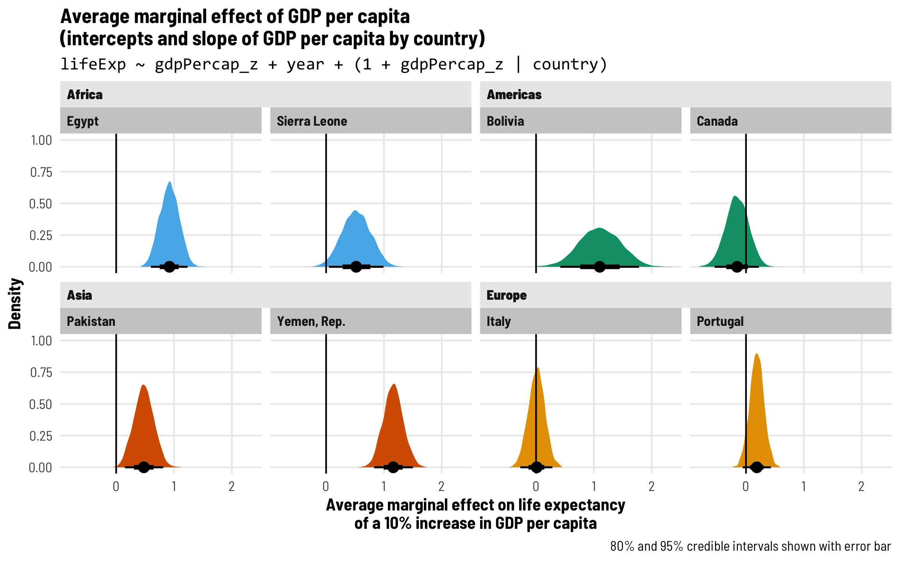
⭐ Each country gets its own intercept and GDP and year slopes ⭐
While it’s cool that GDP now varies by country, we saw earlier that year-based trends in life expectancy also vary across country. We should probably incorporate country-specific differences for both GDP and year. Once again, multilevel modeling makes this easy—we’ll allow year to vary by country too by adding country-specific offsets to the year slope with a \(b_{2, \text{Country}}\) term:
\[ \begin{aligned} \text{Life expectancy} &= (\beta_0 + b_{0, \text{Country}}) + (\beta_1 + b_{1, \text{Country}}) \text{GDP} + (\beta_2 + b_{2, \text{Country}}) \text{Year} + \epsilon \\ b_{0, \text{Country}} &\sim \mathcal{N}(0, \tau_0) \\ b_{1, \text{Country}} &\sim \mathcal{N}(0, \tau_1) \\ b_{2, \text{Country}} &\sim \mathcal{N}(0, \tau_2) \end{aligned} \]
The syntax for this random effects term is (1 + gdpPercap_z + year | country), which lets the intercept (1), GDP per capita, and year vary by country. We’ll use the scaled versions of both regular GDP per capita and logged GDP per capita again, but we’ll see that we run into some serious computational issues now.
model_gdp_country_year <- brm(
bf(lifeExp ~ gdpPercap_z + year + (1 + gdpPercap_z + year | country),
decomp = "QR"),
data = gapminder,
chains = 4, seed = bayes_seed,
threads = threading(2) # Two CPUs per chain to speed things up
)
## Start sampling
## Warning: 47 of 4000 (1.0%) transitions ended with a divergence.
## See https://mc-stan.org/misc/warnings for details.
## Warning: 2 of 4000 (0.0%) transitions hit the maximum treedepth limit of 10.
## See https://mc-stan.org/misc/warnings for details.
## Warning: 1 of 4 chains had an E-BFMI less than 0.2.
## See https://mc-stan.org/misc/warnings for details.
model_gdp_country_year_log <- brm(
bf(lifeExp ~ gdpPercap_log_z + year + (1 + gdpPercap_log_z + year | country),
decomp = "QR"),
data = gapminder,
chains = 4, seed = bayes_seed,
threads = threading(2) # Two CPUs per chain to speed things up
)
## Start samplingIt takes nearly 2.5 times as long to fit the model with gdpPercap_z than it does gdpPercap_log_z, and there are some serious-ish issues with model convergence and effective sample size. Normally, the R-hat values for each parameter are supposed to be as close to 1 as possible, and values above 1.05 are a bad sign that the model didn’t converge. Again, we could try to fix this by using specific priors, using more iterations in the chains, or adjusting some of Stan’s parameters like adapt_delta, but for the sake of this example, we won’t.
# Model with regular GDP per capita
rstan::get_elapsed_time(model_gdp_country_year$fit) %>%
as_tibble(rownames = "chain") %>% mutate(total_seconds = warmup + sample)
## # A tibble: 4 × 4
## chain warmup sample total_seconds
## <chr> <dbl> <dbl> <dbl>
## 1 chain:1 38.0 16.6 54.6
## 2 chain:2 39.0 30.8 69.8
## 3 chain:3 40.1 36.9 76.9
## 4 chain:4 40.0 32.8 72.8
# Model with logged GDP per capita
rstan::get_elapsed_time(model_gdp_country_year_log$fit) %>%
as_tibble(rownames = "chain") %>% mutate(total_seconds = warmup + sample)
## # A tibble: 4 × 4
## chain warmup sample total_seconds
## <chr> <dbl> <dbl> <dbl>
## 1 chain:1 23.8 17.2 40.9
## 2 chain:2 23.7 17.1 40.8
## 3 chain:3 23.5 16.8 40.4
## 4 chain:4 24.4 16.8 41.2# Bad R-hats and low effective sample sizes
bayestestR::diagnostic_posterior(model_gdp_country_year)
## Parameter Rhat ESS MCSE
## 1 b_gdpPercap_z 1.02 60.6 0.113683
## 2 b_Intercept 1.00 346.3 0.053887
## 3 b_year 1.01 730.0 0.000593
# Okay R-hats and okay-ish effective sample sizes
bayestestR::diagnostic_posterior(model_gdp_country_year_log)
## Parameter Rhat ESS MCSE
## 1 b_gdpPercap_log_z 1.00 1695 0.011915
## 2 b_Intercept 1.01 310 0.052171
## 3 b_year 1.00 632 0.000726Fixed (population-level) effects
The global population-level coefficients are again similar to what we saw in the previous models: holding year trends constant, life expectancy increases by 0.39 years for every \$1,000 increase in wealth and 0.424 years for every 10% increase in wealth, on average.
# Unscale both the GDP coefficient and the GDP random variance coefficient
tidy(model_gdp_country_year) %>%
mutate(across(c(estimate, std.error, conf.low, conf.high),
~ifelse(term %in% c("gdpPercap_z", "sd__gdpPercap_z"),
(. / gdp_sd) * 1000, .)))
## # A tibble: 10 × 8
## effect component group term estim…¹ std.e…² conf.…³ conf.…⁴
## <chr> <chr> <chr> <chr> <dbl> <dbl> <dbl> <dbl>
## 1 fixed cond <NA> (Intercept) 52.2 1.00 50.3 54.2
## 2 fixed cond <NA> gdpPercap_z 0.391 0.0906 0.264 0.620
## 3 fixed cond <NA> year 0.316 0.0160 0.286 0.348
## 4 ran_pars cond country sd__(Intercept) 11.0 0.736 9.75 12.6
## 5 ran_pars cond country sd__gdpPercap_z 0.497 0.212 0.278 0.954
## 6 ran_pars cond country sd__year 0.172 0.0127 0.150 0.199
## 7 ran_pars cond country cor__(Intercept).gdpPercap… -0.366 0.241 -0.677 0.114
## 8 ran_pars cond country cor__(Intercept).year -0.548 0.0816 -0.703 -0.382
## 9 ran_pars cond country cor__gdpPercap_z.year -0.430 0.0984 -0.618 -0.234
## 10 ran_pars cond Residual sd__Observation 2.12 0.0617 2.00 2.23
## # … with abbreviated variable names ¹estimate, ²std.error, ³conf.low, ⁴conf.high
tidy(model_gdp_country_year_log) %>%
mutate(across(c(estimate, std.error, conf.low, conf.high),
~ifelse(term %in% c("gdpPercap_log_z", "sd__gdpPercap_log_z"),
(. / gdp_log_sd), .)))
## # A tibble: 10 × 8
## effect component group term estim…¹ std.e…² conf.…³ conf.…⁴
## <chr> <chr> <chr> <chr> <dbl> <dbl> <dbl> <dbl>
## 1 fixed cond <NA> (Intercept) 52.0 0.919 50.2 53.7
## 2 fixed cond <NA> gdpPercap_log_z 4.24 0.397 3.44 5.03
## 3 fixed cond <NA> year 0.259 0.0182 0.224 0.295
## 4 ran_pars cond country sd__(Intercept) 10.4 0.700 9.19 11.9
## 5 ran_pars cond country sd__gdpPercap_log_z 3.26 0.379 2.55 4.05
## 6 ran_pars cond country sd__year 0.202 0.0145 0.175 0.232
## 7 ran_pars cond country cor__(Intercept).gdpPercap… 0.383 0.112 0.150 0.584
## 8 ran_pars cond country cor__(Intercept).year -0.711 0.0485 -0.796 -0.605
## 9 ran_pars cond country cor__gdpPercap_log_z.year -0.697 0.0660 -0.810 -0.555
## 10 ran_pars cond Residual sd__Observation 1.97 0.0391 1.90 2.05
## # … with abbreviated variable names ¹estimate, ²std.error, ³conf.low, ⁴conf.highCountry-level variation and random effects
We’ll forgo detailed interpretations of all our new random effects values and instead just point out that we have estimates for each of the \(\tau\)s: country-based variation in the intercept, the GDP slope, and the year slope. We also have three different correlations now: the correlation between the intercept and the GDP slope, the intercept and the year slope, and the GDP and year slopes. Neat.
If we look at the country-level coefficients, we can see that the intercepts, GDP slopes, and year slopes all vary by different amounts across countries, as intended:
coef(model_gdp_country_year)$country %>%
as_tibble(rownames = "country") %>%
filter(country %in% countries$country) %>%
select(country, starts_with("Estimate")) %>%
# Unscale the GDP offsets
mutate(Estimate.gdpPercap_z = Estimate.gdpPercap_z / gdp_sd * 1000)
## # A tibble: 8 × 4
## country Estimate.Intercept Estimate.gdpPercap_z Estimate.year
## <chr> <dbl> <dbl> <dbl>
## 1 Bolivia 40.7 0.375 0.485
## 2 Canada 68.5 0.0646 0.193
## 3 Egypt 42.9 0.272 0.525
## 4 Italy 66.6 0.0311 0.255
## 5 Pakistan 46.7 0.441 0.386
## 6 Portugal 61.3 0.0353 0.324
## 7 Sierra Leone 38.0 1.23 0.224
## 8 Yemen, Rep. 33.6 0.489 0.577Visualize results
As usual, we can visualize the distribution of these country-specific GDP effects. If we look at regular GDP, we can immediately see some weirdness—a few of these distributions like Sierra Leone and Bolivia aren’t very smooth, likely because we didn’t specify good priors and because the model didn’t fully converge. These things look goofy and we shouldn’t put too much stock in them. Canada, Italy, and Portugal all seem to have null effects, along with Egypt now for whatever reason. But again, these are strange and the model isn’t that great, so we can stop looking at this. Scroll down.
ame_model_gdp_country_year <- model_gdp_country_year %>%
emtrends(~ year + country,
var = "gdpPercap_z",
at = list(year = 0, country = countries$country),
epred = TRUE, re_formula = NULL)
pred_ame_model_gdp_country_year <- ame_model_gdp_country_year %>%
gather_emmeans_draws() %>%
mutate(.value = .value / gdp_sd * 1000) %>%
left_join(countries, by = "country")
ggplot(pred_ame_model_gdp_country_year, aes(x = .value)) +
stat_halfeye(aes(fill = continent)) +
geom_vline(xintercept = 0) +
scale_fill_okabe_ito(order = c(2, 3, 6, 1), guide = "none") +
labs(title = paste0("Average marginal effect of GDP per capita", "\n",
"(intercepts and slopes of both GDP per capita and year vary by country)"),
subtitle = "lifeExp ~ gdpPercap_log_z + year + (1 + gdpPercap_z + year | country)",
x = paste0("Average marginal effect on life expectancy", "\n",
"of a $1,000 increase in GDP per capita"),
y = "Density",
caption = "80% and 95% credible intervals shown with error bar") +
facet_nested_wrap(vars(continent, country), nrow = 2, strip = nested_settings) +
theme_clean() +
theme(plot.subtitle = element_text(family = "Consolas"))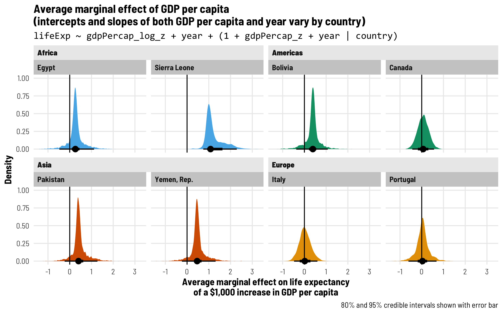
The average marginal effects for logged GDP per capita look a lot smoother (and the model actually converged), so I trust these results more. After accounting for country- and year-specific differences, Canada, Italy, and Portugal all have positive GDP per capita slopes: a 10% increase in GDP per capita is associated with a 0.5ish year increase in life expectancy. We see a slightly smaller effect in Sierra Leone, and even smaller (and less “significant”) effects everywhere else.
ame_model_gdp_country_year_log <- model_gdp_country_year_log %>%
emtrends(~ year + country,
var = "gdpPercap_log_z",
at = list(year = 0, country = countries$country),
epred = TRUE, re_formula = NULL)
pred_ame_model_gdp_country_year_log <- ame_model_gdp_country_year_log %>%
gather_emmeans_draws() %>%
mutate(.value = .value / gdp_log_sd / 10) %>%
left_join(countries, by = "country")
ggplot(pred_ame_model_gdp_country_year_log, aes(x = .value)) +
stat_halfeye(aes(fill = continent)) +
geom_vline(xintercept = 0) +
scale_fill_okabe_ito(order = c(2, 3, 6, 1), guide = "none") +
labs(title = paste0("Average marginal effect of GDP per capita", "\n",
"(intercepts and slopes of both GDP per capita and year vary by country)"),
subtitle = "lifeExp ~ gdpPercap_log_z + year + (1 + gdpPercap_log_z + year | country)",
x = paste0("Average marginal effect on life expectancy", "\n",
"of a 10% increase in GDP per capita"),
y = "Density",
caption = "80% and 95% credible intervals shown with error bar") +
facet_nested_wrap(vars(continent, country), nrow = 2, strip = nested_settings) +
theme_clean() +
theme(plot.subtitle = element_text(family = "Consolas"))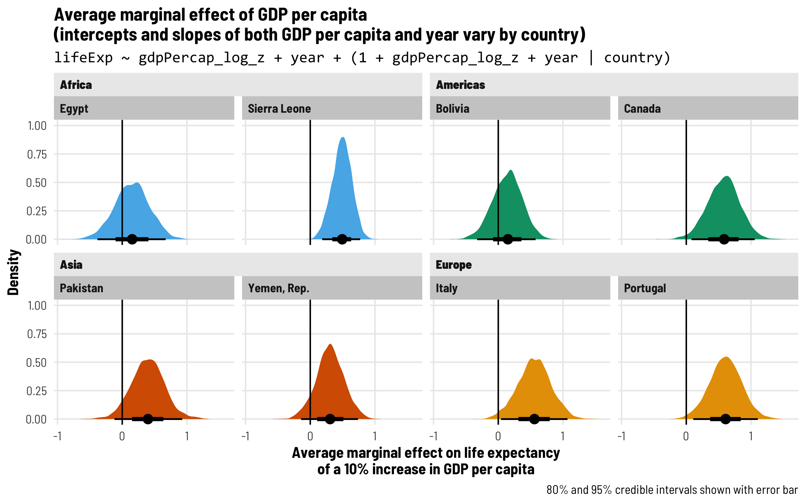
Visualize more generic average marginal effects
It’s really really neat that we can look at the specific effect of GDP on life expectancy in every country individually, but often we just want report a single number—what is the average effect of health on wealth? We don’t want to report 140 separate GDP effects! We just want one!
We can consolidate these country-specific effects into a single value a couple different ways:
- Report a global grand mean, or the average predicted outcome ignoring country-specific deviations
- Report the average predicted outcome for a hypothetical new country
There are a ton of details about these different approaches for finding average marginal effects at this post here—go there to learn all about the nuances of doing this.
Here we’ll do it both ways: calculate a global grand mean and simulate a fake new country (we’ll call it Atlantis).
# Calculate the overall global effect
# `re_formula = NA` means that no random effects will be incorporated
ame_global_gdp_country_year <- model_gdp_country_year_log %>%
emtrends(~ 1,
var = "gdpPercap_log_z",
epred = TRUE, re_formula = NA)
ame_global_gdp_country_year
## 1 gdpPercap_log_z.trend lower.HPD upper.HPD
## overall 5.25 4.28 6.23
##
## Point estimate displayed: median
## HPD interval probability: 0.95
# Get the posterior distribution of this global effect and make a plot
pred_global_gdp_country_year <- ame_global_gdp_country_year %>%
gather_emmeans_draws() %>%
mutate(.value = (.value / gdp_log_sd) / 10) %>%
mutate(fake_facet_title = "Global grand mean")
plot_global_gdp_country_year <- ggplot(pred_global_gdp_country_year, aes(x = .value)) +
stat_halfeye(fill = palette_okabe_ito(5)) +
geom_vline(xintercept = 0) +
labs(x = paste0("Average marginal effect on life expectancy", "\n",
"of a 10% increase in GDP per capita"),
y = "Density") +
facet_wrap(vars(fake_facet_title)) +
theme_clean() +
theme(strip.text = element_text(size = rel(1.1)))
# Calculate the effect for Atlantis
# `re_formula = NULL` means the full random effects structure will be
# incorporated. `allow_new_levels` lets R deal with a new country, and
# `sample_new_levels = "gaussian"` means that the characteristics for this new
# country will be based on random draws from the model
ame_hypo_gdp_country_year <- model_gdp_country_year_log %>%
emtrends(~ 1 + country,
var = "gdpPercap_log_z",
at = list(country = "Atlantis"),
epred = TRUE, re_formula = NULL,
allow_new_levels = TRUE, sample_new_levels = "gaussian")
ame_hypo_gdp_country_year
## country gdpPercap_log_z.trend lower.HPD upper.HPD
## Atlantis 5.19 -2.77 13.1
##
## Point estimate displayed: median
## HPD interval probability: 0.95
# Get the posterior distribution of this Atlantis effect and make a plot
pred_hypo_gdp_country_year <- ame_hypo_gdp_country_year %>%
gather_emmeans_draws() %>%
mutate(.value = (.value / gdp_log_sd) / 10) %>%
mutate(fake_facet_title = "AME for hypothetical Atlantis")
plot_hypo_gdp_country_year <- ggplot(pred_hypo_gdp_country_year, aes(x = .value)) +
stat_halfeye(fill = palette_okabe_ito(7)) +
geom_vline(xintercept = 0) +
labs(x = paste0("Average marginal effect on life expectancy", "\n",
"of a 10% increase in GDP per capita"),
y = "Density") +
facet_wrap(vars(fake_facet_title)) +
theme_clean() +
theme(strip.text = element_text(size = rel(1.1)))
# Show the two AME distributions side-by-side
(plot_global_gdp_country_year | plot_hypo_gdp_country_year) +
plot_annotation(title = paste0("Average marginal effect of GDP per capita", "\n",
"(intercepts and slopes of both GDP per capita and year vary by country)"),
subtitle = "lifeExp ~ gdpPercap_log_z + year + (1 + gdpPercap_log_z + year | country)",
caption = "80% and 95% credible intervals shown with error bar",
theme = theme_clean() + theme(plot.subtitle = element_text(family = "Consolas")))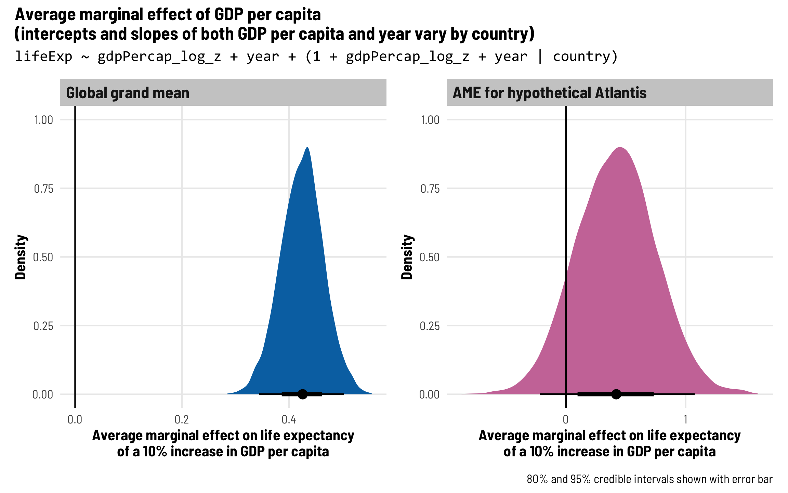
Each country gets its own intercept and GDP and year slopes and year-specific offsets in the GDP slope
This lifeExp ~ gdpPercap_z + year + (1 + gdpPercap_z + year | country) approach is typically sufficient for models based on panel data, but like we did earlier, we can be extra fancy and include random effects for year-specific differences in the GDP per capita effect that are independent of country-specific differences. These typically represent time-specific global shocks, like recessions or pandemics.
To do this, we’ll add independent year-based offsets to the intercept term (\(b_{0, \text{Year}}\)) and to the GDP effect:
\[ \begin{aligned} \text{Life expectancy} &= (\beta_0 + b_{0, \text{Country}} + b_{0, \text{Year}}) + (\beta_1 + b_{1, \text{Country}} + b_{1, \text{Year}}) \text{GDP} + \\ &= (\beta_2 + b_{2, \text{Country}}) \text{Year} + \epsilon \\ b_{0, \text{Country}} &\sim \mathcal{N}(0, \tau_{0, \text{Country}}) \\ b_{1, \text{Country}} &\sim \mathcal{N}(0, \tau_{1, \text{Country}}) \\ b_{2, \text{Country}} &\sim \mathcal{N}(0, \tau_{2, \text{Country}}) \\ b_{0, \text{Year}} &\sim \mathcal{N}(0, \tau_{0, \text{Year}}) \\ b_{1, \text{Year}} &\sim \mathcal{N}(0, \tau_{1, \text{Country}}) \end{aligned} \]
There are so many moving parts here!
In code, we add two random effects terms: (1 + gdpPercap_log_z | year) + (1 + gdpPercap_log_z + year | country). The intercept and the GDP effect get their own year-specific offsets, and the intercept, GDP effect, and year effect get their own country-specific offsets.
We won’t even try to use the regular GDP per capita measure—Stan will choke unless we do some fine tuning. We’ll just look at logged GDP per capita.
model_gdp_country_year_year <- brm(
bf(lifeExp ~ gdpPercap_log_z + year + (1 + gdpPercap_log_z | year) +
(1 + gdpPercap_log_z + year | country),
decomp = "QR"),
data = gapminder,
cores = 4, chains = 4, seed = bayes_seed,
threads = threading(2) # Two CPUs per chain to speed things up
)
## Start sampling
## Warning: 994 of 4000 (25.0%) transitions hit the maximum treedepth limit of 10.
## See https://mc-stan.org/misc/warnings for details.rstan::get_elapsed_time(model_gdp_country_year_year$fit) %>%
as_tibble(rownames = "chain") %>% mutate(total_seconds = warmup + sample)
## # A tibble: 4 × 4
## chain warmup sample total_seconds
## <chr> <dbl> <dbl> <dbl>
## 1 chain:1 37.7 22.0 59.7
## 2 chain:2 37.3 23.7 61.0
## 3 chain:3 95.5 144. 239.
## 4 chain:4 38.7 22.1 60.8Fixed (population-level) effects
The global population-level coefficients are again similar to what we saw in the previous models: holding year trends constant, life expectancy increases by 0.333 years for every 10% increase in wealth, on average.
# Unscale both the GDP coefficient and the GDP random variance coefficient
tidy(model_gdp_country_year_year) %>%
mutate(across(c(estimate, std.error, conf.low, conf.high),
~ifelse(term %in% c("gdpPercap_log_z", "sd__gdpPercap_log_z"),
(. / gdp_log_sd), .)))
## # A tibble: 13 × 8
## effect component group term estim…¹ std.e…² conf.…³ conf.…⁴
## <chr> <chr> <chr> <chr> <dbl> <dbl> <dbl> <dbl>
## 1 fixed cond <NA> (Intercept) 52.5 1.11 50.3 54.7
## 2 fixed cond <NA> gdpPercap_log_z 3.33 0.416 2.49 4.15
## 3 fixed cond <NA> year 0.258 0.0250 0.210 0.306
## 4 ran_pars cond country sd__(Intercept) 10.6 0.729 9.29 12.1
## 5 ran_pars cond country sd__gdpPercap_log_z 2.81 0.354 2.16 3.54
## 6 ran_pars cond country sd__year 0.192 0.0135 0.168 0.220
## 7 ran_pars cond year sd__(Intercept) 0.947 0.254 0.597 1.59
## 8 ran_pars cond year sd__gdpPercap_log_z 0.263 0.0976 0.120 0.503
## 9 ran_pars cond country cor__(Intercept).gdpPercap… 0.283 0.130 0.0158 0.521
## 10 ran_pars cond country cor__(Intercept).year -0.647 0.0569 -0.748 -0.528
## 11 ran_pars cond country cor__gdpPercap_log_z.year -0.681 0.0713 -0.804 -0.528
## 12 ran_pars cond year cor__(Intercept).gdpPercap… -0.819 0.177 -0.993 -0.338
## 13 ran_pars cond Residual sd__Observation 1.80 0.0371 1.72 1.87
## # … with abbreviated variable names ¹estimate, ²std.error, ³conf.low, ⁴conf.highCountry-level variation and random effects
We’ll again forgo detailed interpretations of all our new random effects values. Just note that there are five different \(\tau\) values, as expected, and four different correlations.
If we look at the country-level coefficients, we can see that the intercepts, GDP slopes, and year slopes all vary by different amounts across countries:
coef(model_gdp_country_year)$country %>%
as_tibble(rownames = "country") %>%
filter(country %in% countries$country) %>%
select(country, starts_with("Estimate")) %>%
# Unscale the GDP offsets
mutate(Estimate.gdpPercap_z = Estimate.gdpPercap_z / gdp_sd * 1000)
## # A tibble: 8 × 4
## country Estimate.Intercept Estimate.gdpPercap_z Estimate.year
## <chr> <dbl> <dbl> <dbl>
## 1 Bolivia 40.7 0.375 0.485
## 2 Canada 68.5 0.0646 0.193
## 3 Egypt 42.9 0.272 0.525
## 4 Italy 66.6 0.0311 0.255
## 5 Pakistan 46.7 0.441 0.386
## 6 Portugal 61.3 0.0353 0.324
## 7 Sierra Leone 38.0 1.23 0.224
## 8 Yemen, Rep. 33.6 0.489 0.577Even better, though, is that the GDP slope changes each year too! That’s what we get for including the (1 + gdpPercap_log_z | year) term. The country-specific GDP slopes shift over time now:
# Different slopes in each year!
model_gdp_country_year_year %>%
emtrends(~ year + country,
var = "gdpPercap_log_z",
at = list(year = c(0, 5), country = countries$country),
epred = TRUE, re_formula = NULL)
## year country gdpPercap_log_z.trend lower.HPD upper.HPD
## 0 Egypt 1.09 -5.11 6.61
## 5 Egypt 0.93 -5.44 6.27
## 0 Sierra Leone 4.60 0.99 7.77
## 5 Sierra Leone 4.46 0.92 7.70
## 0 Pakistan 3.84 -1.34 9.62
## 5 Pakistan 3.70 -1.65 9.36
## 0 Yemen, Rep. 2.35 -2.17 7.07
## 5 Yemen, Rep. 2.20 -2.28 7.00
## 0 Bolivia 1.95 -3.06 6.40
## 5 Bolivia 1.82 -3.02 6.45
## 0 Canada 5.77 0.28 11.70
## 5 Canada 5.63 0.30 11.69
## 0 Italy 4.82 -1.08 10.20
## 5 Italy 4.69 -1.20 10.12
## 0 Portugal 5.26 -0.04 10.60
## 5 Portugal 5.15 -0.42 10.23
##
## Point estimate displayed: median
## HPD interval probability: 0.95Visualize results
We can see this time-based change by making a slightly fancier version of our country-specific average marginal effect plot. We’ll show the posterior distribution for each year within each country using ridgeplots. We’ll also shade the credible intervals here using the neat fill_ramp aesthetic instead of showing a point and line, since it would get too visually busy otherwise.
This looks so cool! In some countries like Egypt and Canada, the GDP effect is fairly constant over time. In others, like Sierra Leone, you can see the GDP effect shrink slightly in the 1980s and 1990s, and then increase again after that.
Code
ame_model_gdp_country_year_year <- model_gdp_country_year_year %>%
emtrends(~ year + country,
var = "gdpPercap_log_z",
at = list(year = seq(0, 55, by = 5), country = countries$country),
epred = TRUE, re_formula = NULL)
pred_model_gdp_country_year_year <- ame_model_gdp_country_year_year %>%
gather_emmeans_draws() %>%
mutate(.value = (.value / gdp_log_sd) / 10) %>%
mutate(year = year + 1952,
year = fct_inorder(factor(year))) %>%
left_join(countries, by = "country")
ggplot(pred_model_gdp_country_year_year, aes(x = .value, fill = year)) +
stat_slab(aes(y = fct_rev(year), fill = year,
fill_ramp = after_stat(cut_cdf_qi(cdf, .width = c(0.02, 0.8, 0.95, 1)))),
height = 2, color = "white", slab_size = 0.5) +
scale_fill_viridis_d(option = "rocket", guide = "none", end = 0.9) +
scale_fill_ramp_discrete(range = c(1, 0.2), guide = "none") +
geom_vline(xintercept = 0) +
labs(title = paste0("Average marginal effect of GDP per capita", "\n",
"(intercepts and slopes of both GDP per capita and year ",
"vary by country + intercepts vary by year)"),
subtitle = paste0("lifeExp ~ gdpPercap_log_z + year + ",
"(1 + gdpPercap_log_z | year) + ",
"(1 + gdpPercap_log_z + year | country)"),
x = paste0("Average marginal effect on life expectancy", "\n",
"of a 10% increase in GDP per capita"),
y = "Year",
caption = "80% and 95% credible intervals shown with shading") +
facet_nested_wrap(vars(continent, country), nrow = 2, strip = nested_settings,
scales = "free_x") +
theme_clean() +
theme(panel.grid.major.y = element_blank(),
plot.subtitle = element_text(family = "Consolas"))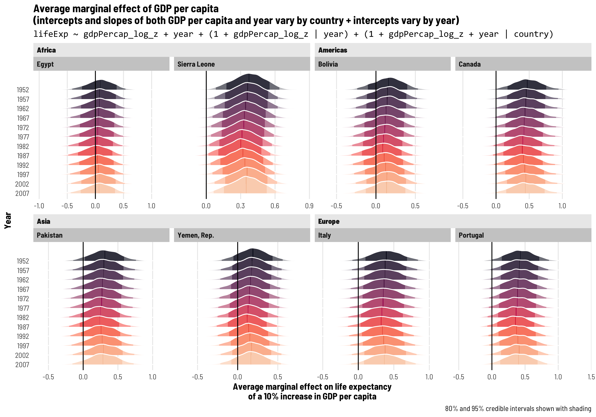
Visualize more generic average marginal effects
Finally we can calculate some aggregate average marginal effects to talk about the general effect of wealth on health. We’ll (1) find the global grand mean, (2) calculate the average effect in our fake Atlantis country in a fake 2020 year, and (2) calculate the average effect in Atlantis over time.
Code
# Calculate the overall global effect
# `re_formula = NA` means that no random effects will be incorporated
ame_global_gdp_country_year_year <- model_gdp_country_year_year %>%
emtrends(~ 1,
var = "gdpPercap_log_z",
epred = TRUE, re_formula = NA)
# Get the posterior distribution of this global effect and make a plot
pred_global_gdp_country_year_year <- ame_global_gdp_country_year_year %>%
gather_emmeans_draws() %>%
mutate(.value = (.value / gdp_log_sd) / 10) %>%
mutate(fake_facet_title = "Global grand mean")
plot_global_gdp_country_year_year <- ggplot(pred_global_gdp_country_year_year, aes(x = .value)) +
stat_slab(aes(fill_ramp = after_stat(cut_cdf_qi(cdf, .width = c(0.02, 0.8, 0.95, 1)))),
fill = palette_okabe_ito(5)) +
scale_fill_viridis_d(option = "plasma", guide = "none", begin = 0.5) +
scale_fill_ramp_discrete(range = c(1, 0.2), guide = "none") +
geom_vline(xintercept = 0) +
labs(x = paste0("Average marginal effect on life expectancy", "\n",
"of a 10% increase in GDP per capita"),
y = "Density") +
facet_wrap(vars(fake_facet_title)) +
theme_clean() +
theme(panel.grid.major.y = element_blank(),
strip.text = element_text(size = rel(1.1)))
# Calculate the effect for Atlantis in 2020
# `re_formula = NULL` means the full random effects structure will be
# incorporated. `allow_new_levels` lets R deal with a new country, and
# `sample_new_levels = "gaussian"` means that the characteristics for this new
# country will be based on random draws from the model
ame_hypo1_gdp_country_year_year <- model_gdp_country_year_year %>%
emtrends(~ country + year,
var = "gdpPercap_log_z",
at = list(year = (2020 - 1952), country = "Atlantis"),
epred = TRUE, re_formula = NULL,
allow_new_levels = TRUE, sample_new_levels = "gaussian")
# Atlantis median 2020 effect
ame_hypo1_gdp_country_year_year %>%
gather_emmeans_draws() %>%
mutate(.value = (.value / gdp_log_sd) / 10) %>%
median_hdci()
## # A tibble: 1 × 8
## country year .value .lower .upper .width .point .interval
## <fct> <dbl> <dbl> <dbl> <dbl> <dbl> <chr> <chr>
## 1 Atlantis 68 0.330 -0.231 0.905 0.95 median hdci
# Get the posterior distribution of this Atlantis effect and make a plot
pred_hypo1_gdp_country_year_year <- ame_hypo1_gdp_country_year_year %>%
gather_emmeans_draws() %>%
mutate(.value = (.value / gdp_log_sd) / 10) %>%
mutate(fake_facet_title = "AME for hypothetical Atlantis in 2020")
plot_hypo1_gdp_country_year_year <- ggplot(pred_hypo1_gdp_country_year_year, aes(x = .value)) +
stat_slab(aes(fill_ramp = after_stat(cut_cdf_qi(cdf, .width = c(0.02, 0.8, 0.95, 1)))),
fill = palette_okabe_ito(7)) +
scale_fill_ramp_discrete(range = c(1, 0.2), guide = "none") +
geom_vline(xintercept = 0) +
labs(x = paste0("Average marginal effect on life expectancy", "\n",
"of a 10% increase in GDP per capita"),
y = "Density") +
facet_wrap(vars(fake_facet_title)) +
theme_clean() +
theme(panel.grid.major.y = element_blank(),
strip.text = element_text(size = rel(1.1)))
# Calculate the effect for Atlantis across all existing years
ame_hypo_gdp_country_year_year <- model_gdp_country_year_year %>%
emtrends(~ country + year,
var = "gdpPercap_log_z",
at = list(year = seq(0, 55, by = 5), country = "Atlantis"),
epred = TRUE, re_formula = NULL,
allow_new_levels = TRUE, sample_new_levels = "gaussian")
# Get the posterior distribution of this Atlantis effect and make a plot
pred_hypo_gdp_country_year_year <- ame_hypo_gdp_country_year_year %>%
gather_emmeans_draws() %>%
mutate(.value = (.value / gdp_log_sd) / 10) %>%
mutate(year = year + 1952,
year = fct_inorder(factor(year))) %>%
mutate(fake_facet_title = "AME for hypothetical Atlantis across time")
plot_hypo_gdp_country_year_year <- ggplot(pred_hypo_gdp_country_year_year, aes(x = .value)) +
stat_slab(aes(y = fct_rev(year), fill = year,
fill_ramp = after_stat(cut_cdf_qi(cdf, .width = c(0.02, 0.8, 0.95, 1)))),
height = 2, color = "white") +
scale_fill_viridis_d(option = "rocket", guide = "none", end = 0.9) +
scale_fill_ramp_discrete(range = c(1, 0.2), guide = "none") +
geom_vline(xintercept = 0) +
labs(x = paste0("Average marginal effect on life expectancy", "\n",
"of a 10% increase in GDP per capita"),
y = "Year") +
facet_wrap(vars(fake_facet_title)) +
theme_clean() +
theme(panel.grid.major.y = element_blank(),
strip.text = element_text(size = rel(1.1)))
# Show all the AME distributions in a mega plot
((plot_global_gdp_country_year_year / plot_hypo1_gdp_country_year_year) |
plot_hypo_gdp_country_year_year) +
plot_annotation(title = paste0("Average marginal effect of GDP per capita", "\n",
"(intercepts and slopes of both GDP per capita and year ",
"vary by country + intercepts and GDP slopes vary by year)"),
subtitle = paste0("lifeExp ~ gdpPercap_log_z + year + ",
"(1 + gdpPercap_log_z | year) + ",
"(1 + gdpPercap_log_z + year | country)"),
caption = "80% and 95% credible intervals shown with shading",
theme = theme_clean() + theme(plot.subtitle = element_text(family = "Consolas")))
Each continent and nested country gets its own intercept and GDP and year slopes
Finally, for super bonus fun and games, we could incorporate an extra continent-level hierarchy into the model, since countries are nested in continents and regions might see specific trends in the GDP/life expectancy relationship. I’m not actually going to run this model here—it takes a while even on a fast computer, and you have to specify informative priors and let it run for more iterations, etc. If we did run this, we’d get 7 different \(\tau\) parameters and 6 different correlation parameters and we could do all sorts of fun stuff with the posterior. But we won’t run this for now—you can though!
model_gdp_continent_country_year <- brm(
bf(lifeExp ~ gdpPercap_log_z + year +
(1 + gdpPercap_log_z + year | continent / country),
decomp = "QR"),
data = gapminder,
cores = 4, chains = 4, seed = bayes_seed,
threads = threading(2) # Two CPUs per chain to speed things up
)# You'd use this to calculate the continent/country specific effects
model_gdp_continent_country_year %>%
emtrends(~ year + continent:country,
var = "gdpPercap_log_z",
at = list(year = c(0), country = countries$country),
nesting = "country %in% continent",
epred = TRUE, re_formula = NULL, allow_new_levels = TRUE)Other ways of dealing with time
Throughout this guide, we’ve treated the time effect as linear, and that’s probably okay for this toy Gapminder example. In reality, though you can model time in all sorts of fancier ways, and there are whole textbooks and courses about how to do that (like Solomon Kurz’s excellent brms and tidyverse translation of Singer and Willett’s Applied Longitudinal Data Analysis here). For example, Solomon Kurz here uses R’s built-in ChickWeight dataset to model the effect of different diets across time on chick weights:
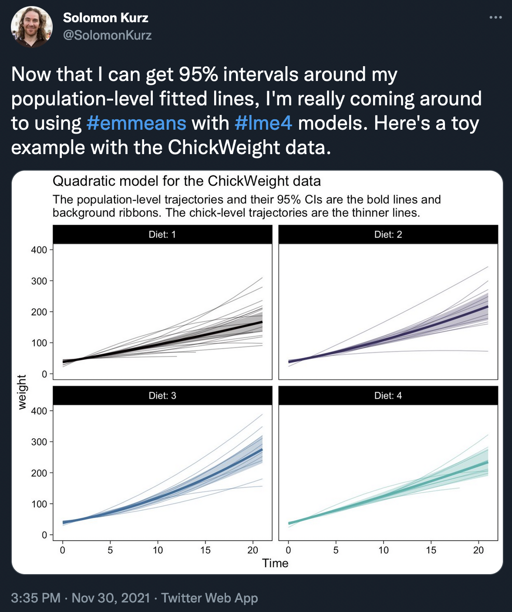
The model he uses looks like this—he uses time, time², the interaction of time and diet, the interaction of time² and diet, and adds chick-specific offsets to both time and time²! That lets the model pick up all sorts of linear and quadratic trends in time and their interactions with different diets, all across individual chicks in the dataset. That’s super neat.
fit <- lme4::lmer(
weight ~ 1 + Time + I(Time^2) + Diet + Time:Diet + I(Time^2:Diet) +
(1 + Time + I(Time^2) | Chick),
data = ChickWeight
)You could also add splines, higher-order polynomials (time⁴!), and other complexity to model time, but that goes way beyond the scope of this guide. Refer to Solomon’s guide for more about all that.
tl;dr holy crap this was so long
This guide was long and detailed, but again, the audience for this post is future-me. You’re all just along for the ride :)
Multilevel models let us deal with both time and country-level differences in panel data, and the ways we structure the random effects terms determine what we’re actually estimating.
Here’s a super quick review of the different models we ran and what they do:
Country-specific intercepts + global time trend:
bf(outcome ~ x + year + (1 | country))Country-specific intercepts and country-specific slopes for year + global time trend:
bf(outcome ~ x + year + (1 + year | country))Country-specific intercepts and country-specific slopes for year and
x+ global time trend (this seems to be the most common and sensible approach):bf(outcome ~ x + year + (1 + x + year | country))Country-specific intercepts and country-specific slopes for year and
xand year-specific intercepts + global time trend:bf(outcome ~ x + year + (1 | year) + (1 + x + year | country))Country-inside-continent-specific intercepts and country-inside-continent specific slopes for year and
x+ global time trendbf(outcome ~ x + year + (1 + x + year | continent / country))Super wild party time: Country-inside-continent-specific intercepts and country-inside-continent specific slopes for year and
xand year-specific intercepts and slopes forx+ global time trendbf(outcome ~ x + year + (1 + x | year) + (1 + x + year | continent / country))